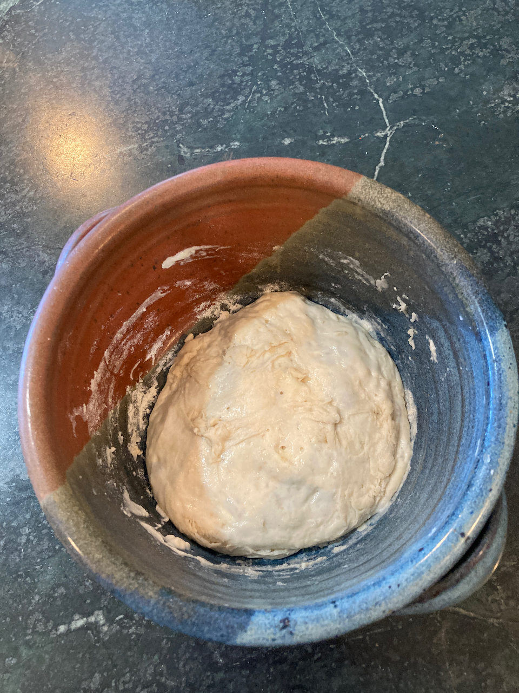
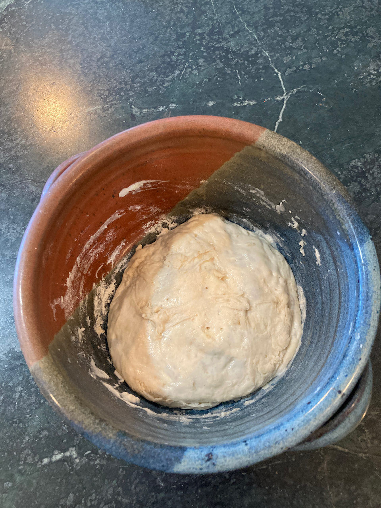

Front Matter
Dedication
My adventures in the kitchen date back to my childhood, and I am actually thankful that neither my mother nor my father (Vince and Jean Cochrane) liked to cook, so they eagerly encouraged my childhood desire to explore. As an adult, my family - both my first wife, the late Barbara Leyden, and my second, Alice Kahn, provided encouragement and constructive criticism where necessary. Finally, my two sons, Steven and John Cochrane, are continuing the cooking tradition - Steven as a vegetarian and John as a budding pitmaster. This book is lovingly dedicated to all of them.
A Note on Production and Organization
This book was prepared using the Rstudio bookdown package. This means that the writing is done using markdown syntax, which is then rendered into html, pdf, and epub versions. My knowledge of markdown is not negligible (I used it a lot in the later part of my career), but neither is it extensive. Furthermore, I am much more interested in writing about food than in dealing with the intracacies of formatting and publishing, so I’ve kept things pretty basic. I hope this works for you.
Among other features, this combination of tools makes it relatively easy to insert images, although its ability to position them and add fancy features is (at least in my hands) rather limited. Thus, most of the figures are at the end of subsections, and panels contain no more than two images. Also, again for the sake of convenience, I took most of the photos with my iphone. I tried to compose the image somewhat, but some of them are a bit on the crude side.
I’ve made most of the recipes herein multiple times, but occasionally I will enter an untested one. When I do prepare it, there is a good chance I will adjust it. If so, I will change the recipe and usually include a note as to why the change has been made. Thus, this book is a work in progress, so feel free to check back often. The date below is that on which the most recent version was published.
Organization
When I first started this project, I tried to organize recipes into broad categories - breads, grilling/barbecuing, and other (“Comfort Foods”). I then decided to add “International Cooking”, as well as two sections of new ideas (“Explorations” and “Links to Follow”. That was already getting confusing, but when I joined the world of Instant Pot® users, things really got out of hand. So, as I write today (July, 2023), I am well aware that organization needs work. I will try to improve it using the existing categories during the coming weeks, but ultimately I hope to produce a version 2.0, where most of these problems go away.
1 Introduction
Cooking has always been a big part of my life, but since I retired from my career as a geneticist, I have had more time to explore new areas. In particular, two types of cooking are central to my culinary efforts:
1.1 Bread
I have long been fascinated by sourdough cooking - I successfully made my first starter (on the first try!) in 1974 and managed to keep it going for a few years before moves and inattention doomed it to oblivion. When I moved to Ohio in 2007, my interest was rekindled, especially after I discovered Reinhart’s Artisanal Bread at Home. His starter recipe took a couple of tries, but the use of “organic” flour and pineapple juice in the initial mix proved successful. That starter is now about 13 years old and going strong (I’ll talk about maintenance in the Bread section).
The second piece in by bread baking evolution was a result of my wife’s Christmas gift of Tartine Bread by Chad Robertson in 2021. This is a fascinating book, one which interweaves recipes with detailed explanations of the reason for each step and photographs of how the steps are performed. The recipes are fairly involved, and following them from the book involves a lot of page turning (NOT something I’d want to do with an ebook), but the results can be spectacular. Again, I will provide some simplified ideas to facilitate your efforts.
1.2 Grilling and Barbecuing
In 2011, Alice and I embarked on a major project to finish the basement of her (now our) home. So what does this have to do with cooking? Nothing directly, however while shopping for a gas fireplace, we saw our first Big Green Egg and decided we wanted one (she mostly for its appearance, me for the intriguing cooking possibilities). Shortly thereafter, we purchased a medium one, and while we had a lot of fun with it (initially for pizza and baked potatoes), it soon became apparent that we needed a larger one. Accordingly, a few years later, I sprung for a large one. I will have more to say about it in the Big Green Egg section.
Over the subsequent years, my Green Egg recipe portfolio has diversified. Most of what I do can be divided into two categories - grilling and barbecuing. Grilling is what most casual outdoor cooking enthusiasts are most familiar with - cooking over high heat, often with some sort of basting sauce, with cooking times usually measured in minutes. Barbecuing, by contrast, involves “low and slow” cooking (temperatures maintained at 150-250o F.) and cook times measured in hours. The results, with properly monitored cooking, can be outstanding.
1.3 Other Stuff
But you might say things like “man doesn’t live by bread alone” or “what about the winter months?”. Both are valid critiques, so in a subsequent section, I will describe some indoor cooking recipes I’ve come to depend on. And I’ll be quite honest - I really don’t go for admittedly healthy options like, perhaps, green bean and kale salad. So I’ve entitled the chapter Comfort Food, reflecting the fact that, while the recipes are perhaps not the stuff of a dietician’s dream, they are (at least to me) fun to eat. Furthermore, most of them don’t require a whole lot of cooking time. Some of them are modifications of ones originally found in cookbooks (which are cited), but which I have modified for either flavor or ease of cooking reasons. A good example of this is the recipe for macaroni and cheese - the sauce is originally from the venerable Joy of Cooking but modified to increase the spiciness and make use of a microwave oven.
1.4 A Note on Portion Size and Original Sources
Everyone is familiar with estimated serving numbers in published recipes. In general, I find them to be rather inaccurate, so when trying a new recipe, I use them at most for a rough guideline. And personally, what I found to be a single serving for me 50 years ago is a serving plus leftovers or even two servings for me today. All of the recipes I’ve included are of that size; you of course may find otherwise.
And finally, I will confess that there are very few original recipes in this book - all are ones that were originally obtained from either a cookbook or an online source. Those sources are cited in the recipes themselves, and all sources, with brief annotations, are provided in the concluding section.
2 Kitchen Essentials
So the bad news is that there is an enormous number of kitchen gadgets, utensils, dishes, bowls and table top appliances out there eager to drain your wallet. The good news? You don’t need most of them. Beyond the items found in every kitchen (stove, refrigerator, mixing bowls, etc.) there are only a few items that will make your life easier, and in fact you can cook perfectly adequately without them. Here are a few that I use on a regular basis.
2.1 Bread Making
The following can be done without, but I consider them to be all but essential.
- A stand mixer. The two cookbooks I recommend in the Bread section have different takes on this. Reinhart calls for using one in almost every recipe, while I’m pretty sure that Robertson (Tartine Bread) doesn’t even mention them. I happen to use one wherever possible, even when the recipe doesn’t call for it (and will do do so throughout the recipes). Ours is a Viking that, as far as I can tell, is no longer being manufactured (although you may find a used one available on ebay or some similar site). The much more common ones, of course, are those of Kitchenaid, definitely fine machines. They come in two sizes , 4 qt. and 5.5 qt. I received one of the former as a wedding present 40 years ago, and it served all of my needs at the time just fine (indeed, it is now at my lakefront cottage in the Finger Lakes and still going strong). Were I to buy one today (or if our Viking dies), I would probably go with the larger one.
- A kitchen scale. Most breadmakers will recommend that weight be used to measure ingredients. This is particularly important for flour, since even different bags of the same brand can have different densities. You can get a decent electronic one for around $25.
- For Essential Tartine Bread, proofing baskets are a must. I use oval ones, which were used to shape the loaves shown above.
- Also for tartine bread, a dutch oven or a covered roasting pan is required. By doing the inital bake in one with the cover on, you get the high humidity environment that commercial bakers get by injecting steam into the baking oven.
- A pizza stone or steel is useful for baking rolls and freestanding loaves in addition to pizza. Do get a heavy duty one - the more inexpensive round ones sold at grocery and department stores do not stand up to the high heat used in some of these recipes.
- For making essential tartine bread you will need a dutch oven or an oven roaster, one which can be inverted for cooking.
- You will need to cut the dough with a knife during the shaping process. If you have a large (8-10 inch) chef’s knife, that will work fine, however a bench knife is useful not only for cutting but also for manipulating dough pieces. We already had a pizza knife that serves these purposes well.
2.2 Grilling
Of course, you will need the basic grilling tools - spatula, fork, tongs and heavy oven mitts. And a cleaning brush. Beyond those I would recommend a grilling basket and a fish grilling mesh. In both cases, be sure you get ones with removable handles, since they won’t fit inside a closed Green Egg with the handles on. An example of a grilling basket is this one from Williams Sonoma.
2.3 Indoor Cooking
In general, all you need here is a decent selection of pots, pans and bowls. However, I do recommend considering the following:
- An immersion blender. I never really thought about one of these until I heard an NPR piece on possible Christmas gifts for the cooks in one’s life. I immediately thought of my younger son John, so I got him one and he liked it. I subsequently purchased one for myself, a Braun, that is not only a blender but can also be a small chopper, useful for things like grating hard cheese and mincing garlic.
- A slow cooker. This is definitely a secondary priority, since most recipes that call for one can easily be adapted for the stove top or oven. However, it is nice to be able to throw a meal together and forget about it for a few hours. I’ve included some recipes that use it, but I’ve also made suggestions as to how to cook them conventionally.
- A convection toaster oven In the summer months, it’s nice to be able to cook in one of these and avoid heating up the house by using the oven.
- Only a few of these recipes call for using a microwave oven, but one is great to have, especially for thawing and warming leftovers.
- Finally, we finally broke down and bought an Instant Pot®, the six quart Pro model, and having had it for several months, I have no regrets. While it is basically a computerized pressure cooker at heart, its capabilities go beyond that - I’ve done sous vide cooking (nothing elaborate) and yogurt making with great success. And once you learn certain basic protocols for different kinds of dishes it is relatively easy to adapt other recipes to it. And there are at least as many recipes on the internet as there are cat videos, so the possibilities for exploration are limitless. One piece of advice that is ubiquitous - they are not especially good as slow cookers, since they heat only from the bottom, as opposed to from all sides in a dedicated device.
3 Bread
3.1 Getting Started
While I’ve tried to include everything you need to know in order to bake all of these recipes, I have not included a lot of background information on the whys and wherefores of the processes. For that, I strongly recommend that you purchase the following two books And get physical books, not ebooks. Ebooks are not good for all the page-flipping you will want to do.
- Artesan Bread at Home by Peter Reinhart. This is the book I started with, and it remains a go-to source. It walks you through making and maintaining starter, and my recipes for Pan au Levain and pizza dough originated there. There are lots of other good recipes (both sourdough and conventional) that you may want to try.
- Tartines, by Chad Robertson. This book took me to the next step of sourdough baking. It is a different kind of book, in that a) it is very autobiographical, an b) it is mostly built around a single recipe. It is also extremely well illustrated, so I’d suggest having it at hand when you follow my condensed versions of his recipes.
3.2 What you will need
3.2.1 Flours
Volumes have been written on the virtues and shortcoming of all kinds of flour. For the casual baker, but of that can be ignored, however there are a few basics that need to be kept in mind.
3.2.1.1 Sources
I have the good fortune of having access to an excellent bulk food store (Sauder’s Store in Seneca Falls, NY), so I can buy 25 pound bags of flour for about $18.00. Because I can only get there a couple of times a year, I usually buy 2-3 bags and them store them in a sealed plastic tub. I’ve never had any problems with weevils. If you live near a similar source, go for it. However, if you don’t, King Arthur varieties are always good (for high gluten choices, “Bread Flour” works well; their “Sir Lancelot” is the best).
3.2.1.2 Bread vs. All Purpose.
The big difference here is gluten. Fortunately, none of my family have any problems with it, so my motto is the more the merrier. This is where bread flour comes in - it is simply white flour that is high in gluten. Use of bread flour leads to a more elastic dough and a more open texture of the resulting loaf.
3.2.1.3 Whole Wheat Flour
I’ve never been a fan of 100% whole wheat bread, however adding a small amount (maybe 10-20% of the total) tends to improve the flavor (and perhaps marginally the nutritional value) of most bread recipes. It is an essential part of both Pan au Levain and Essential Tartine Bread, and can be added to most of the other recipes (however I don’t recommend it for Dinner Rolls, and adding it to pizza dough is a matter of taste). It pays to get high quality stone ground whole wheat flour - you’ll pay a little more for it, but one bag goes a long way.
3.3 Making the starter
3.3.1 Getting it Started
3.3.2 Maintaining and Recharging
Reinhart recommends recharging the mother starter at least once a week. I find that not to be necessary (at least with my starter) - doing so every 3-4 weeks has proven to be adequate. However, my qualitative observation is that the longer I’ve left it in the refrigerator, the longer the recharge fermentation takes. Only once or twice has following the recipe below failed; in that case I go back to step xxx in the process I used to make the starter in the first place and go from there. The normal recharge procedure is as follows:
2 3/4 cups bread flour (add some whole wheat if you like)
1 cup warm water
3/4 cup mother starter
- Mix all of the ingredients together using a non-metalic
spoon/spatula or your fingers.
- Transfer to a clean ceramic bowl and cover with food service wrap
- Place in a warm place overnight, or until the starter has nearly doubled in bulk and is very bubbly.
- Transfer to a sealed food storage container and store in the refrigerator. I do recommend labeling the container with the date it was made.
3.4 Recipes
3.4.1 Pan au Levain
This is our go-to Reinhart-style bread, and I give him all of the credit for suggesting the ingenious trick of adding whole wheat flour to the starter. My addition was to hybridize it with the Robertson approach to proofing, shaping and baking. I think you will be more than pleased with the results.
3.4.2 Pizza Dough
3.4.3 Sourdough Rolls
Below are two recipes from Amy Duska at Little Spoon Farms, a great source for sourdough ideas. Like me, she is self-taught in the art of sourdough baking, and her recipes are geared towards others with similar aspirations. Below are two of her recipes, each with a few tweaks I’ve incporated.
3.4.3.1 Dinner Rolls
I cooked these for Thanksgiving dinner, and I anticipate doing so from here on out (as well as any other occasion that calls for them). They are like store-bought dinner rolls, however the sourdough imparts more flavor. Like most of the recipes I’ve used, this is a three day process - make the starter (overnight), mix the dough and do primary fermentation (day 2), do refrigerated secondary fermantation over night, and shape and bake (day 3).
3.4.3.2 Day 1
Make the starter as follows:
1 tbsp mother starter
~1/3 cup flour (either bread or all purpose)
3.5 tbsp water
Combine the above in a small bowl, cover with food service wrap, and let it rise in a warm place overnight.
 

Starter Before and After Overnight Fermentation
3.4.3.3 Day 2
Dough ingredients:
2 tbsp melted butter
1 cup (240 gm) milk
1 tbsp (44 gm) sugar
1 tsp (5 gm) salt
1/2 cup (100 gm) starter
3 cups + 2 tbsp (375 gm) bread flour
1 tbsp melted butter to brush on surface after baking
Mixing the dough:
- Combine butter, sugar, milk and salt and warm over low heat until butter is melted. transfer to mixer bowl and let cool to room temperature.
- Add flour and starter and mix with paddle attachment at low speed, until the ingredients are mixed and hydrated.
- Transfer dough to a ceramic bowl, cover with a dish towel, and let it stand for an hour.
- Now comes our first exposure to tartine-style stretching and folding. Uncover the dough, and with moistened clean hands, pick up the dough from one side, stretch it a bit, and fold over what’s in the bowl. Repeat this process three times, rotating the bowl 1/4 turn before each one.
- Repeat step four two more times, allowing 30 minutes of rising time between each stretch and fold.
- Cover the bowl with food service wrap and refrigerate overnight.

After initial mixing


Dough before (left) and after (right) stretching and folding. Note that the dough has expanded in volume and has a smoother surface. It also becomes much more elastic.
3.4.3.4 Day 3
Today is shaping and baking day, a good day to plan for delicious fresh rolls with dinner!
- Remove the dough from the refrigerator and let it warm 1-2 hours.
- Put dough on a surface dusted with rice flour and divide into 12 roughly equal pieces of ~65 grams each.
- Shape each piece into a ball by turning up the sides and pinching them together. Arrange in a 9 X 13 inch baking dish dusted with rice flour (either a glass or a ceramic dush will work), cover with a towel, and let rise 3-4 hours.
- Preheat your oven to 375o F. Brush the surface of the rolls with melted butter and bake 25-30 minutes until golden brown.
3.4.4 Parmesan Bubble Loaf
This is a combination of three recipes, the dinner roll recipe we’ve already seen, the recipe from another old but excellent cookbook - A World of Breads by Dolores Casella, and the technique for making cheese breads from Reinhart. We used the first to make the dough and the others to process and bake the dough.
Note that this recipe, as given previously, makes enough dough for one loaf. I usually double everything to make two - one to eat right away (it doesn’t last long!) and one to freeze for later.
Ingredients
A batch of dinner roll dough, processed through Day 2 (in other words, substitute the following for the Day 3 instructions).
1/2 cup parmesan cheese, grated. (3/4 cup if doubled)
2 cloves garlic, grated or smashed (3 if doubled)
1/2 cup butter (3/4 if doubled)
1 batch dough
- After the dough has warmed from its overnight fermentation, gently flatten it on a floured work surface
- Fold in the parmesan, divide the dough into 14 pieces and shape into
balls.
- If you are doing a double batch, divide it into two halves and process each as above.
- Melt the butter, add the garlic and cook briefly.
- Lightly oil a standard bread loaf pan. Roll each ball of dough in the garlic/butter mix and stack in the loaf pan.
- Cover with a kitchen towel and allow it to rise 3-4 hours.
- Bake at 400o F. for ~45 minutes until the top of the loaf is golden brown.

Flattened dough with cheese sprinkled on it.


Unbaked loaf before and after the final rise.

The final product
3.4.4.1 Notes
The baking time and temperature given work well in the oven, however it came out rather dark in the toaster oven. In the future, I’ll try the settings for Honey Wheat Sandwich Bread - 375o F. for 40-45 minutes.
3.4.5 Ciabatta rolls
3.4.6 Kaiser Rolls
3.4.7 Essential Tartine Bread

My first loaf and the source of the recipe
It is fair to say that Alice’s gift of the book Tartine Bread by Chad Robertson revolutionized my approach to bread making. Instead of calling for relatively stiff dough kneaded either by hand or in a stand mixer, a series of gentle stretch and folds is used during the bulk fermentation of a very soft dough. I have incorporated a stand mixer into the initial combining of ingredients - it saves a lot of mess - but otherwise I follow the original handling instructions (I have adjusted the flour ratio somewhat, but that was a matter of personal taste). If you want to go this route, it may involve some investment, but the results will be worth it.
So first, buy the book. It is available (and quite inexpensive) as an Amazon ebook, but I strongly recommend spending the bucks (currently $20.49) for the printed version.
Then there are the items described in the Kitchen Essentials section - a kitchen scale, a bench knife, proofing baskets, and a dutch oven/oven roaster. I already had the roasting pan, but I needed to buy the rest. As I recall, the total cost of those items was something on the order of $60.
3.4.7.1 My method
What I describe below is a bare bones set of instructions for making this bread. The book provides much more detail, along with copious illustrations. You might also want to watch this video to see the process in action.
3.4.7.2 The Leaven (or Starter)
1 Tbsp mother starter
100 gm bread flour
100 gm whole wheat flour
200 gm. Water
Mix these ingredients and let it rise at room temperature overnight in a container sealed with food service wrap.
3.4.7.3 Preparing the Dough
Ingredients
700 + 50 gm. Water (80o F.)
200 gm. leaven*
900 gm. bread flour
50 gm. whole wheat flour
10 gm. salt
* This will not be all of the starter. If you wish, the unused portion can be used to start a new batch of mother starter.
- Combine th 700 ml of warm water with the leaven, bread flour, and whole wheat flour in the bowl of your stand mixer. Mix with the paddle mixer on slow until the flour is fully hyrdated (about a minute.
- Let the dough stand for 25-40 minutes.
- Transfer the dough to a clean bowl (I use a ceramic one; Robertson recommends a clear plastic container).
- Add the salt and remaining water to the dough, and gently squeeze it in with your hands.
- You should allow for four hours of fermentation. During the first two hours, gently fold the dough with moistened hands, as described in the recipe for dinner rolls. You can continue folding during the last two hours, only be extremely gentle. The dough will have become more elastic, and its bulk will have increased by about 20%.
3.4.7.4 Shaping the loaves
From here on out, the key word is gently. During the rise, the dough will have become much more porous. We want to retain as much as possible so that the final product will have the light texture we desire.
- Turn the dough out onto a very lightly floured work surface.
- Divide the dough into two equal pieces with your bench knife, and flour the surfaces of each. Fold over the cut side of each so that there is a smooth floured circle on the top.
- Gently shape each piece into a smooth circle, cover them with a kitchen towel, and let them rest for 30 minutes.
- Flip each loaf with your bench knife or a large spatula, so that the floured side is now down.
- For each loaf, perform the following folds:
- Fold the third of the dough closest to you over the middle third.
- Stretch the dough horizontally to the right and fold the rightmost third over the center.
- repeat this process for the left of the dough.
- Now fold the rear third of the dough over the middle. While holding that in place, fold up the front of the dough to create a seam down the middle of what will be the bottom of the loaf.
- Gently shape the loaf into an oval, stretching slightly to help seal the seam.
- Now dust your proofing baskets with a 50:50 mixture of white and whole wheat flour.
- Place each loaf into a basket seam side up, cover with food service wrap, and refrigerate overnight.
3.4.7.5 Baking
- Put your dutch oven or roaster into the oven and preheat it to 500o F.
- While the oven is preheating, remove the first loaf from the refrigerator and dust the surface with rice flour.
- When the oven has preheated, carefully remove the dutch oven from
it.
- Place the loaf into the shallow piece of the dutch oven and score the surface with two lengthwise parallel cuts about 1/4 inch deep. A serrated knife works well for this.
- Cover the bread with the deeper piece of the dutch oven and return it to your oven. Reduce the temperature to 450o F.
- After 20 minutes, carefully remove the upper part of the dutch oven. You will release a lot of steam at this point, and the loaf should be just lightly browned.
- Bake for an additional 20-25 minutes until the crust is golden brown. Using a spatula, place it onto a cooling rack.
- Return the dutch oven to the oven and increase the heat to 500o F.
- While the oven is reheating, take the second loaf out of the refrigerator and dust with rice flour, in preparation for repeating steps 3 to 7 above.

The inside of the finished product, showing the open crumb that results from gentle handling of the dough.
3.4.8 Tartine Baguettes
This is our second recipe from Tartine Bread, one that is similar to the previous one but with a couple of key differences:
- It uses both sourdough and commercial yeast starters in the dough.
- Mixing, rising and baking can occur all on the same day.
There are also two ways to bake the bread. The first is on your baking stone, with a dish towel saturated in water placed in a shallow pan in the oven to create steam - the method in the original recipe.
The second is one I devised, and after many so-so results, have refined to something that gives me what I want - loaves with a light but firm golden brown crust. In it, I bake the loaves in a cakepan covered with foil for the first thirty minutes, remove the foil and continue to back until the loaves are browned, and then wrap them in clean towels while they cool. Furthermore, by placing a cookie sheet between the stone and the pan, the bottoms of the loaves do not get overcooked. Lots of web searching, combined with trial and error, led me to this method.
Finally, I’ve pretty much settled on using a half recipe and shaping into three loaves. That is what is given below
3.4.8.1 Starters
Leaven (sourdough starter)
1 tbsp. mother starter
110 gm. all purpose flour
110 gm water (80o F.)
Poolish (commercial yeast starter)
100 gm. all purpose flour
100 gm water (80o F.)
2 gm. active dry yeast
Mix the two starters in separate small bowls, cover with food service wrap and place in a warm location overnight.
3.4.8.2 Mixing and Fermenting
200 gm. leaven (all of it)
200 gm. poolish (ditto)
250 gm. water (75-80o F.)
375 gm. all purpose flour
175 gm. bread flour
5 gm. salt
- Combine leaven, poolish, water, and both flours in bowl of stand mixer. Mix with paddle attachment at low speed until all of the flour is hydrated (~1 minute). Cover with cloth and let stand 30-60 minutes.
- Transfer to a clean bowl and add salt and the remaining water. Work
them in with your hands.
- Let the dough rise in a warm place, gently folding every 40 minutes, until the dough becomes puffy and springy (3-4 hours). Alternatively, let the dough rise for 90 minutes and then refrigerate overnight.
3.4.8.3 Shaping
And in all candor, I’m still working on the best shaping method. This is what I’ve come up with so far.
- Place the dough on a lightly floured surface and divide first into three equal pieces, each of which is divided three ways.
- Shape each piece into a rectangle and let it rest for 30 minutes.
- Cover a cookie sheet with a towel and dust it with rice flour.
- For each loaf, do the following:
- Position the rectangle with the long side towards you and fold the front third over the middle one.
- Stretch the dough so it nearly doubles in length and then fold the rear third back over the middle.
- Roll the dough gently with your hands to stretch it further and taper the ends.
- Place the loaf on one edge of the towel seam side up.
- Repeat step 4 for the next loaf. When you place it on the towel, do so such that a fold of the towel is positioned between it and the previous loaf.
- When all loaves are shaped, cover with another towel and let them rise for 2.5-3 hours.
3.4.8.4 Baking
As noted above, there are two methods that can be used.
On a Stone
- Position your stone on a middle rack. On a lower rack, place a shallow pan containing a water saturated dish towel.
- Preheat the oven to 500o C.
- Invert the loaves onto a pizza peel and score the loaves with a 2-3 long angled and parallel cuts.
- As soon as the oven reaches temperature, place as many loaves as will fit onto the stone using a pizza peel dusted with rice flour.
- Reduce the temperature to 475o F. and bake for 15 minutes.
- Remove the pan with the towel and continue to bake for 15-25 minutes, until the baguettes are golden brown. Reomove from the oven and place loaves on a cooling rack.
- Repeat steps 2 through five as many times as necessary to bake all of your baguettes.
In a pan
- Preheat your oven to 500o F, with your stone positioned on a middle rack
- Invert the loaves onto a large (9 X 13 in. or larger) cake pan.
Score the loaves as above Cover with aluminum foil.
- Place the pan onto the baking stone in the oven, with a cookie sheet between the pan and the stone. Lower the temperature to 475o F. and bake for 30 minutes.
- Remove the foil and continue to bake for another 10-15 minutes, until the loves are a rich golden brown.
- Wrap the loaves in clean kitchen towels and place on a cooling rack.

The final product. In this case, a double recipe was prepared andthe dough was divided into eight loaves. All were baked on a pizza steel (method 1) on the same day.
3.4.9 Sourdough Brioche Buns
In my seemingly eternal quest for decent homemade burger buns, this sounds like a recipe worth trying. As an alternative, here is a simpler recipe. The main difference is less butter and sugar (probably a good thing, dietarily speaking).
4 Grilling and Barbecuing
As I mentioned earlier, I am a Big Green Egg addict. So what is it? A more generic name is a komodo cooker - a heavy duty ceramic charcoal cooker, shaped like the ubiquitous Weber Cooker, but much heavier and more expensive. If your budget can afford it, I recommend spending the bucks for an Egg, especially if you anticipate doing a lot of low temperature barbecuing. It is much easier to control the temperature than in a Weber-style device, and a load of charcoal goes a lot longer (an 18 hour barbecue of pork butt or brisket can be completed on a single generous charcoal load). Also, with proper handling, one will last forever, so that while the upfront costs are a challenge, over time you may end up saving money - in my prior life, I found that metal cookers had a lifespan of something like 3-5 years.
With respect to what size to get, I strongly recommend the large (original) Egg. As I mentioned earlier, we started with a medium (recommended for cooking for 2) but quickly found it to be overly constraining - I could barely fit four ears of corn on the cob into it. Furthermore, you can forget grilling multiple different items at the same time.
Note that there is an extra large model, which is huge. If you have a big family or are a grilling fanatic, you might want to consider it, but is is far larger than anything I can foresee ever needing.
Finally, don’t look for a bargain online. They are sold only through authorized dealers. By buying from one, your Egg will come with a lifetime guarantee on the ceramic parts,
4.1 Charcoal and Lighting
There are two cardinal rules regarding what to use in a Green Egg:
- NEVER use lighter fluid. It will soak into the ceramic and ruin your investment.
- Only use lump charcoal, not briquets, essentially for the same reason, but also to improve the flavor of just about everything.
The instructions for you Egg will recommend that you only use “genuine Big Green Egg Charcoal”. Ignore that advice. Yes, BGE charcoal is high quality, but a) it is expensive, and b) it may be hard to find. I have been using supermarket-branded lump charcoal for years and have found it to be quite satisfactory.
With respect to lighting, most sources recommend using a chimney, in which you mix some charcoal and some paper. The paper is ignited, and when the charcoal is burning, the chimney is removed and more charcoal is added as needed. I’ll be honest - I’ve never tried this. Rather, I load the charcoal into the egg, insert 2-3 paraffin-saturated composite sticks into it, and then ignite them. With this method, I reliably get a nice bed of hot coals in 10-15 minutes.
4.2 Accessories
4.2.1 The Basics
For grilling, it certainly is possible to use your new Big Green Egg “out of the box”, however a number of accessories, from the mundane to the sophisticated (and of course from cheap to expensive) help to greatly expand your grilling and barbecuing repertoire. Here are a few I find to be invaluable:
- An ash tool, something you should order when you purchase your Egg. It is absolutely necessary for removing ashes from the Egg through the lower vent.
- A garden trowel, which facilitates arranging the charcoal once it is in the egg.
- A ConvEGGctor. I hate the name, but it’s a great device if you want to use your egg more like an oven than a grill. I routinely use it with brisket and smoked pork, and also for bread, which I occasionally cook in the Egg.
There is, of course, a bunch of other stuff you will want to have, such as a grill brush, standard grilling tools, and some heavy duty oven mitts, but those are largely items of personal preference. I’ll now turn to the the critical issue of temperature control.
4.2.2 Temperature Control
One of the great advantages of the Big Green Egg is that, with a little practice, you can control the temperature when the lid is closed (which for me is most of the time. The question is how. They come with a dome thermometer, but they are notoriously inaccurate. So what to use in its place?
There are two temperatures that really matter, especially when barbecuing. The first is the grill temperature; the second is the internal temperature of what you are cooking. And because you don’t want to be opening and closing the lid any more than necessary, it is valuable to have a remote monitoring system for both.
Big Green Eggs come with a dome thermometer, but they are notoriously inaccurate. I ignore it most of the time.
For all matters of temperature and time, I am a big fan of Thermoworks. Not only do they make high quality devices, but their website is an excellent source of recipes, ones we will be referring to frequently. If you sign up for their newsletter, you will receive only one email a day. Some of them are purely promotional, but others contain links to recipes you may want to explore. These are their devices I’ve used over the past decade or so, ranging from the most basic to the most elaborate.
- The ChefAlarm Thermometer and Timer was my first device, and it is very useful for indoor cooking. It will monitor a single temperature and has both time monitoring and high and low temperature alarms. It comes with a single probe for monitoring internal temperatures, meaning that it can’t be used to monitor both internal and grill temperatures. In addition, it does not have remote monitoring (Bluetooth or WiFi) capabilities.
- If you don’t go with the previous device, you will need a standalone timer. While Thermoworks is in the business of selling temperature controlled devices, it also offers an excellent selection of time monitoring devices. My personal favorite is the Extra Big and Loud Timer - it is very simple and straightforward to use. Of course all kinds of timers can be had at grocery stores, kitchen stores, etc., so if you already have one of those (or wish to save money by buying one) that is a perfectly fine option.
- I strongly recommend an instant read thermometer. If you have an internal monitoring device, it only reads the temperature in one spot; other spots in the item cooking may be hotter or cooler. The best device on the market right now is the Thermopen One, which has a one second response time. The Classic Thermopen is also a fine option, having a response time of 2-3 seconds, and which is about $20 less expensive.
- Now we get into the heavy duty stuff - multiple channel devices with remote monitoring capabilities. I’ve already addressed why multiple channel monitoring is important (for both grill and internal monitoring); we sometimes can use one or two additional channels (such as grilling or barbecuing poultry, where keeping track of both thigh and breast temperatures are important). Thermoworks has two options to be considered. The first is the Smoke series of devices. The most inexpensive ($99 at time of writing) has two channels and basic blutetooth capabilities, and comes with one internal and one grill temperature probe. Moving up in sophistication (and price) are the Smoke X2 and Smoke X4, both of which use longer distance RF transmission and have 2 and 4 channels respectively. But the absolute best (and what I use exclusively) is the Signals bluetooth and wifi device. It can be controlled by a reasonably functional smart phone app, and with it connected to your WiFi network, you can actually monitor temperatures from anywhere in the world. That may seem silly, but when you’re doing a 16 hour barbecue of a brisket or a pork butt, that may prove to be useful - you will not be tied to your home for the duration. Indeed, when you use a temperature control device (see below) you can actually make adjustments to the cooking temperature from afar.
- Of course, probes are an essential part of any temperature monitoring system. All of the above devices come with an adequate selection of probes, but there are a large number of different ones available. One I use a lot is a High Temperature Needle Probe, which is shorter, making it ideal for monitoring small or thin items like chicken wings or fish. Also, although I was skeptical at first, I have found Probe Spools to be an incredible convenience. They all but eliminate tangling and kinking, things that can greatly reduce probe lifetimes.
- So far we’ve dealt with temperature monitoring, but what about Temperature Control? We are now at the ultimate high end of sophistication. The device for doing so is the Billows Temperature Control Fan, a fan that attaches to the lower vent of a barbecue device and, in combination with a Smoke or a Signals device, does its best to control the chamber temperature. I always use it for low temperature cooking, and if I do so carefully, it is a godsend. BUT, two caveats:
- It requires electricity. I am fortunate enough to have an outdoor plug near my outdoor cooking area, but if you don’t, you’ll have to either rig up extension cords from the nearest outlet or spring for a 12 Volt Battery Pack, which actually costs more than the device itself ($99 vs. $79).
- It is really good for bring your grill up to temperature, but it is largely ineffective in bringing it down. Thus, if you’re doing a low temperature cook, it is critical that you get it attached, set, and running well before the chamber has reached your desired temperature.
- It requires electricity. I am fortunate enough to have an outdoor plug near my outdoor cooking area, but if you don’t, you’ll have to either rig up extension cords from the nearest outlet or spring for a 12 Volt Battery Pack, which actually costs more than the device itself ($99 vs. $79).
- Finally, how to store all this mess? While it’s not, in my opinion, Thermoworks’ finest product, their Extra Large Zippered Storage Case will hold all of my devices (which, just to review, are a Big and Loud Timer, a Thermopen, a Signals monitoring unit, a Billows control unit, and four probes on spools). I’ve also managed to add some metal skewers that I use on occasion.

Big Green Egg with Billows and Signals attached.


Screen shots of Thermoworks app display. Left: Readings screen, showing internal temperature (top) and grill temperature (bottom) at the beginning of a run. Right: Graph screen after one hour of cooking a tritip roast. Grill temperature is in green and internal temperature is in gold.

My temperature monitoring and control kit. Clockwise from top: Skewers, wiring for Billows, Billows device, Thermopen, Signals controller, Big and Loud timer.
4.3 Grilling
4.3.1 Chicken
Chicken is, of course, incredibly versatile, and like pork or beef, it can benefit from low temperature cooking (see recipes in the Barbecue section. But sometimes, you may want to cook up some chicken pieces for a quick dinner. As with most chicken recipes, I greatly prefer thighs - they are much more forgiving, in that unlike white meat, they don’t dry out if they are cooked to too high a temperature. Here’s a very basic but versatile recipe.
Ingredients
Four bone-in chicken thighs
olive oil
kosher salt
milled black pepper
~1/2 cup your favorite barbecue sauce
- Light your grill and heat it to 450o F.
- Rub the surface of the chicken pieces with the olive oil and sprinkle with salt and pepper.
- Grill the chicken for ~15 minutes, turning every 3-4 minutes.
- Brush both sides of the chicken with barbecue sauce and return to the grill.
- After 2 minutes, brush the chicken with more barbecue sauce, flip, and brush the second side as well.
- Repeat this process 1-2 more times, until the barbecue sauce is gone and/or the internal temperature of the thighs has reached 170o F. (155o for white meat).
Note that this recipe goes very well with the next recipe for corn on the cob. If you choose to do both, grill the chicken first, put it in a foil-covered bowl, and then grill the corn.
4.3.2 Corn on the cob
I am fortunate enough to have grown up in sweet corn country. Indeed, one of my fondest childhood memories is, when we were visiting family friends on a farm in Macedon NY, the children (including me) were sent out in the field to pick fresh corn for the day’s dinner. From the field to the pot in 10 minutes - absolutely delicious! Unfortunately, I then spent a big chunk of my life in Florida, and corn there simply doesn’t measure up to what I grew up with. Thus, it was absolutely wonder to discover, when I moved to Ohio in July of 2007 (peak corn season) that the corn here measures up to what I remember as a child.
So the first secret about corn on the cob is freshness. Ideally, it should be cooked the day it is picked; with storage, even refrigerated, the sugar in the corn rapidly turns to starch. I have eaten second day corn, which is satisfactory, but fresher is better.
So here’s my method for cooking corn on the grill. I’m not sure where I got the original recipe, but it’s pretty basic and ubiquitous.
Ingredients
2-6 ears of fresh sweet corn, in husks
melted butter
fresh ground pepper
grated parmesan (optional)
butcher twine
- Peel the husks back (do NOT remove them) and discard silks.
- Place corn into a large kettle of water and let soak for at least an hour.
- Remove the corn from the water, baste with melted butter, and sprinkle with pepper, Parmesan (if desired) and any other flavors you might like (dill is a popular one). A half a stick of butter is sufficient for four ears.
- Cut one ~8 inch piece of twine for each ear. Wet them in water to make them easier to tie.
- Fold the husks up over the corn and tie together with twine.
- Place the corn on your grill preheated to 450o and roast a total of 10 minutes, rotating the ears every 2.5 minutes.
- Remove ears from grill. With neoprene mitts on, grasp the ear with one hand and the stem with the other. Snap vigorously and separate the stem and attached husk from the ear of corn (you may want to cut the twine with scissors first).
- Serve with just about anything.

Four ears of corn soaking with the husks pulled back and the silks removed.

Corn prepared as described and half way through grilling

Grilling is complete

Ready to eat

Ready for the compost pile.
4.3.3 Beef Fajitas
This recipe was originally one designed for the Instant Pot, but it is really easy to prepare it on a grill. It can also be prepared on the stove top, substituting a heavy frying pan for the grill basket.
Ingredients
~3/4 lb beef, sliced into strips for stir fry (flank steak works well)
2 tbsp fajita seasoning*
1 bell pepper
1 onion
Splash of red wine
1 lime, cut into wedges
Flour tortillas
- Coat the beef with a tablespoon of fajita seasoning and the splash of red wine. Marinate for 30 min to an hour.
- Slice the vegetables and add the remaining seasoning.
- Place the meat in a grill basket and cook over a medium hot (450o F.) grill until browned, about 3-5 minutes. Remove and set aside.
- Add the vegetables to the basket and cook for about 10 minutes, until vegetables are cooked through.
- Add the meat to the mixture and cook for another 5-10 minutes.
- In your kitchen, briefly warm the tortillas eitheron a frying pan over medium heat or by toasting briefly (1-2 minutes) in a toaster oven. Place in a basket and cover with a kitchen towel.
- Serve the tortillas, filling and lime wedges for people to put together for guests to serve themselves. If desired, add your favorite hot sauce and/or sour cream (not my favorite).
*There are plenty good choices of fajita seasonings out there. If you choose to make your own, here is the recipe that I use.
2 tbsp chili powder
4 tbsp ground cumin
2 tsp smoked paprika
4 tbsp garlic powder
2 tsp onion powder
2 tsp cayenne pepper
2 tsp oregano
1 tsp black pepper
1 tsp salt
Mix everything together and store in an air tight container. Paprika, cayenne, and salt amounts can be adjusted to taste.
If you are an instant pot user, you can find the original recipe here.
4.3.4 Chicken Fajitas/Tacos
This is a recipe from New York Times commentator Jamelle Bouie. He recommends adding guacamole to the final product; do so according to your taste.
Ingredients
1 cup dark Mexican beer
2 tbsp sesame oil
2-3 cloves garlic, chopped
1 tsp dried oregano
1 tsp kosher salt
1/2 tsp freshly ground black pepper
1/4 tsp ground cayenne pepper
6 boneless skinless chicken thighs
guacamole to taste
(optional) Sautéd onions and peppers
flour or corn tortillas
- Mix all of the ingredients except for the last four.
- Add the chicken thighs (intact) to the mixture, cover, and let marinate for at least two hours and up to overnight.
- Prepare your grill for direct cooking at 450 o F.
- Grill the chicken until browned, about 4-5 minutes per side.
- Let the chicken rest for at least 5 minutes and then cut into strips for use in fajitas or tortillas
- Warm the tortillas, either on the grill or in a toaster oven, for 1-2 minutes
- Add guacamole and/or sautéd vegetables to the tortillas and cover with chicken strips for serving.
As an alternative to this recipe, I’m sure that the recipe for Beef Fajitas would work as well, only the chicken would be sliced prior to seasoning and cooking, and grilling would be in a basket.
4.3.5 Korean Chicken Skewers
This is a recipe from Southern Living and is absolutely delicious and pretty easy to prepare. I cook these on metal skewers that are about 12 inches long and have a flat shape, so that the skewered food is easier to handle.
Ingredients
1/2 cup unsalted butter
2 garlic cloves, peeled and grated
1/3 cup honey
1 tsp kosher salt
1 tsp rice vinegar
2 lb boneless skinless thighs, cut into 1 inch cubes
1 large red onion, cut into wedges
- Prepare your grill for direct cooking at 450o F.
- Melt the butter on the stovetop over medium low heat.
- Add the garlic and cook for about two minutes.
- Add the salt, vinegar and 2 Tbsp soy sauce, bring to a boil, and cook for about 2 minutes.
- Toss the chicken with the remaining soy sauce.
- Thread the chicken and onion wedges onto skewers, adding two pieces of chicken followed by one onion wedge.
- Grill, basting often with honey butter mixture, for 10-12 minutes until chicken is light charred and cooked (if you want to check with an instant read thermometer, the internal temperature of the chicken should be ~165o.
- Serve over rice or bucatini.
4.3.6 Grilled Shrimp
I agree with Bubba in Forrest Gump - you can do just about anything with shrimp. Furthermore, they can be cooked easily and rapidly (the big danger is overcooking). As for grilling, there are lots of possibilities - allrecipes.com provides 18 recipes for doing so. Thermoworks has a post that goes through the grilling process in detail.
Here’s the recipe I’ve settled on. You may also want to try shrimp wrapped in Serrano ham described elsewhere.
Ingredients
1/2 cup butter 1 shallot, minced
4 cloves garlic, peeled and minced
1/4 tsp red pepper
1 tsp. paprika
0.5-1 lb. large (16/20) shrimp, peeled and deveined
1 lemon, quartered
- Light your grill and bring it to about 350o F.
- Soak 3-6 wooden skewers in water for at least 20 minutes
- Melt the butter over low heat.
- Add the shallot, garlic, paprika and red pepper. Simmer 2 minutes
- Place the shrimp on skewers (3-4 shrimp on each) and brush liberally with the butter mixture.
- Grill for about four minutes, turning at least once. The desired internal temperature is 120o F.
- Serve over pasta, with any remaining butter mix mixed in. Squeeze 2 lemon quarters over each serving.


Shrimp on skewers, before and after grilling

4.3.7 Elk Burger
I hadn’t eaten elk in nearly 50 years, but I remember it fondly. The partner of a friend had the good fortune of bagging one and thus had a LOT of meat to share. I, being a low paid VISTA volunteer at the time, jumped at this free food opportunity, and I didn’t have cause to regret it.
Recently, Thermoworks posted this interesting recipe, one that uses a novel cooking - grilling indirect until the burger is partially cooked and then doing so directly until it is done. I tried it, and it was wonderful. Inde ed, while I don’t eat hamburgers much anymore, if I do so in the future, I’m going to use this approach.
But how does one do indirect cooking on a Green Egg? A little searching on Amazon led me to this device. It’s a bit pricey, but it works like a charm for the purpose. It also results in improved air circulation and thus cleaner burning charcoal.

Big Green Egg set up for indirect and direct cooking. A single elk burger is on the indirect side, and grill and internal temperature probes are in place.
Ingredients
1 lb ground elk, divided into three patties
salt and pepper
3 kaiser rolls or hamburger buns
cheese and condiments, as desired
- Load charcoal in one side of the divider and ignite. When they are burning, close the lid and monitor the temparture until it reaches 450o F.
- While the charcoal is igniting, apply salt and pepper to the patties to taste. I found that lots of pepper and just a little salt works well.
- If necessary, slice the rolls in half.
- Insert a needle probe into the side of one of the burgers. Place them on the indirect cooking side of the Green Egg and close the lid.
- When the internal temperature reaches 120o F, switch them to the direct side, and place the rolls on the indirect side, face down.
- Grill the burgers, flipping every 40 seconds or so, until the internal temperature reaches 160o F, monitoring with a handheld probe. This takes about 2-3 minutes.
- When they are done, check the rolls - they should be lightly toasted.
- If using cheese, return the burgers to the indirect side when they reach 150o F. and let them stand until the cheese is melted.
- Apply your favorite toppings and eat! Ready to eat.
4.3.8 Grilled Lobster
4.4 Barbecuing
So the predominant advice on most barbecue recipes is “low and slow”. This makes sense, since the original Caribbean *barbacoa” was performed in a charcoal filled pit in the ground. More importantly, it gives time for the meat to take up the smoke flavor. Accordingly, most of the recipes here call for maintaining a temperature between 200 and 250o F. But of course that also means that cook times can be quite long - as much as 18 hours for a packer brisket or a full Boston butt roast. So plan ahead!
With that in mind, here are a few points to consider:
- You’ve put your internal temperature monitor into your brisket or butt, the grill temperature is stable, and the internal temperature is rising steadily. UNTIL it reaches 160 or so. Then it just sits there, possibly for hours. This is the infamous “stall” that occurs when liquid in the meat starts evaporating, causing evaporative cooling. At that point, you have two choices - either wait it out, or wrap the meat in foil or “peach paper”, essentially unwaxed butcher paper. I prefer the latter for a couple of reasons. First of all, at this point the meat has absorbed all of the smoke it’s going to. Second, the meat is less likely to dry out as it rises to the magic end point of 203o F. And, of course, it saves time
- Even if you are cooking for a large family, it is doubtful that a full packer brisket will be devoured on the first sitting. So how to reheat leftovers? Thermoworks recommends a sous vide approach, in which frozen leftover barbecue is placed in a ziploc bag and immersed in a water bath maintained at 175o F. until the internal temperature reaches 165o F. This something that can easily be done with a sous vide wand or an InstantPot®, but the link above describes how it can be accomplished with a pot of water on the stove top.
4.4.1 Brisket Style Tritip
This is a great place to start in your barbecue adventure. Unlike a brisket, it is a small piece of meat, more suitable for 1-2 people (although it will yield up multuple servings. Furthermore, the cook time is reasonable (6-7 hours), and leftovers will keep in the refrigerator for days.
Ingredients:
2-3 pound Tri-tip roast
Your favorite beef barbecue rub (I use Penzey’s Barbecue 3000
3-4 Oak or Hickory Wood Chunks
Peach paper (available at Lowes)
- Soak the wood chunks in water for at least 30 minutes.
- Load the barbecue with charcoal and add two Fire Starter Sticks. Ignite.
- As soon as the flame dies down, add the soaked wood chips and stir them into the coals as best you can.
- Place your ConvEGGtor, and aluminum drip pan, and grill in place
- Immediately hook up your Billows device with a long probe in channel 1 and your grill monitoring probe (attached to the grill).
- Using the Thermoworks app, set the fan temperature to 250o F. Close the upper vent on the Egg nearly completely
- Apply a binder to the tri-tip. Mustard is the standard here, however I use olive oil.
- Apply rub liberally to all sides
- Insert a long probe into the heart of the roast and place on grill. Close the lid and let the cooking commence.


Left: Beginning the barbecue Right: Tritip wrapped in butcher paper for final cook.
At this point, sit back, have a beer or a glass of wine, and keep an eye on time and temperature. When the internal temperature reaches 150o F. or when 2 hours have past (whichever comes first), proceed as follows:
- Remove the roast from the Egg, keeping lid-open time to a minimum.
- Wrap the roast in two layers of orange butcher paper.
- Return the roast to the Egg, and with the app, increase the grill temperature to 275o F.
- When the roast has reached 200o F. (about 3-4 hours), remove it and let it stand wrapped for 20 minutes or so.
- Slice and enjoy!


Cooked and sliced.
4.4.2 Roast beef for sandwiches
This is one that showed up in my inbox from Thermoworks. I haven’t tried it yet, but I’m betting it will work well barbecued on the grill. Note that the original recipe calls for a preliminary sear; I’m betting that smoking without the convEGGtor will get the job done.
Ingredients
1 eye round roast, 2-3 lb
kosher salt
black pepper
- The night before you cook, salt the roast generously and place in the refrigerator covered.
- Prepare your grill for low temperature smoking at 200o. You may or may not want to add wood chunks (oak or hickory).
- Rinse off excess salt, dry, and apply pepper.
- Barbecue at 200o F until internal temperature reaches 120-130o F. (lower for more rare meat, higher for more tender).
- Use your instant read thermometer to check for doneness.
- For ease of slicing, put roast in the refrigerator overnight.
4.4.3 Pork ribs
There are, of course, a variety of cuts of ribs out there - we will concentrate on “St. Louis” ribs, cooked “wet” (that is, finished with barbecue sauce). Because ribs are high in connective tissue, they need to be cook to a high enough internal temperature for the tough collagen to be converted to gelatin. We also have to overcome the “stall”, when at about 160o F. water is release from the meat and slow the temperature increase as a result of evaporative cooling.
The following so-called 3-2-1 cooking is from Hey Grill Hey, and works rather well. A rack of ribs can be ready to eat in about 6-7 hours.
Ingredients
1 rack of ribs
2 tbsp pork rub
1 cup apple cider or juice
1/4 cup dark brown sugar
2-3 tbsp butter
1/2 cup your favorite barbecue sauce*
* While I normally like hot sauces, in this case a milder tomato-based sauce works better.
- Prepare your barbecue for smoking (using the convEGGtor) with hickory wood chunks at ~200 o F.
- Pat the ribs dry and attempt to remove the membrane from the back by grasping with a paper towel and pulling. Don’t worry if you don’t get all of it - the ribs will still be fine.
- Liberally dust both sides of the rib with your favorite rub.
- Place the ribs on the grill, with an internal temperature probe in place, and grill for about 3 hours. The internal temperature should reach ~160o F.
- Place a sheet of heavy duty aluminum foil on your work surface and transfer the ribs to it, bone side up.
- Sprinkle the ribs with brown sugar, and distribute the butter as multiple pats on the surface. Raise the sides of the aluminum foil to form a boat and add the apple cider or juice.
- Wrap the foil tightly around the ribs, reinsert the internal temperature probe, and return to the barbecue. Maintain at 225 o F. for two hours.
- Unwrap the ribs and baste them on both sides with barbecue sauce. Continue cooking for one hour, flipping and basting occasionally. The final internal temperature should be 200-205o F.
4.4.4 Pig Wings
Despite the fact that we live near Cincinnati, home of the Flying Pig Marathon, these are not made from avian porcines. Rather, they are partially deboned and trimmed pork shanks, prepared with a sauce similar to traditional buffalo wing sauce. The meat may be available from a local butcher shop; online it can be had at Porter Road in Nashville (a great source of meat, but expensive, with high shipping costs). Alternatively, you may be able to get properly trimmed pork shanks from your local butcher shop.
Like brisket or pork butt, shanks are full of connective tissue that must be broken down in order to yield a properly tender result. This will occur if the meat is cooked to an internal temperature of 200o F. That processed is hastened by covering the pan containing “wings” and sauce for the second half of the cooking.
Ingredients
Pig wings (however many you want)
BBQ rub
1 onion, sliced or diced.
8 oz. butter
8 oz. hot sauce (your favorite)
Juice of half a lemon
1 tbsp. mustard powder
1/2 cup apple cider vinegar
12 oz. beer
- Prepare your smoker as you did for tri-tip. For this recipe, you want to reach a cooking temperature of 250o F. Hickory or apple wood work well for this recipe.
- Remove any excess fat and the silver skin (if any) from the wings.
- Season with BBQ rub (or with salt, pepper and garlic powder).
- Place in the smoker and cook for 1 hour, turning every 20 minutes.
- While the wings are smoking, make the sauce as follows:
- Melt the butter, add the onion, and sauté until soft.
- Add all of the remaining ingredients EXCEPT the beer and let it boil for a couple of minutes.
- Add the beer and boil for an additional 5 minutes.
- Melt the butter, add the onion, and sauté until soft.
- After the hour of cooking above, mop the wings with the sauce. Continue to cook for an additional hour or until the internal temperature reaches 180o, mopping every 20 minutes or so.
- Transfer the wings to an aluminum pan with ~1/2 inch of sauce in it. Top the wings with some of the onions from the sauce.
- Cover the pan with foil, insert an internal temperature probe into one of the wings through the foil.
- Cook until the internal temperature reaches 200o. Verify with your instant read thermometer.
- Allow wings to rest 10-15 minutes and then serve.
4.4.5 Candied Ribs/Pork Wings
This recipe comes from Thermoworks And calls for “wide ribs” - basically St. Louis ribs cut into two rib sections. It occurs to me, however, that it would also work well with pig wings. The recipe below uses “wings”; the original post describes how to process ribs.
Ingredients
pig wings
3-4 tbsp barbecue rub
barbcue sauce (as both a binder and a baste)
Rib candy* or alternative syrupy sauce (honey, maple syrup, etc.)
- The day befor cooking, brush wings with barbecue sauce and apply rub. Refrigerate overnight.
- Set up your smoker to a temperature of 225o F.
- Place the wings in the smoker with a needle probe in one and a grill temperature monitor in place.
- When the internal temperature reaches 200o F., glaze the wings with a 2:1 mixture of barbecue sauce and syrup.**
- Continue cooking for an additional hour, turning and basting occasionally. Remove and serve.
* This is a commercial product available from multiple online sources, including this one.
**having now cooked this once, I would modify it along the lines of 3-2-1 ribs,as follows
- Hook over indirect heat until the internal temperature reaches about 150o F.
- Wrap with foil or butcher paper and continue cooking, increasing the grill temperture to 275o F., until internal temperature reaches 195-200o F.
- Unwrap, baste thoroughly with sauce mixture, and continue cooking for an additional hour, turning and basting occasionally.
Total cooking time is about 6 hours, and the results are spectacular.
4.4.6 Chicken Wings
What’s not to love about chicken wings? Aside from the fact that they are messy to eat, they are very tasty, either by themselves or (as is more common) dipped in one of many different wing sauces. Of course, wings are often broiled or fried, but I have found that slow cooking on the barbecue works very well. My preference is for wings that have been sectioned prior to cooking, but that is not necessary if you prefer keeping them whole.
Ingredients
2 lb. chicken wings
barbecue seasoning of choice (salt and pepper would also work)
4 oz. hot sauce,*
3 tbsp. butter
- Prepare your grill for smoking at 220oF. I do not use wood chunks for this - the charcoal imparts plenty of flavor.
- Pat the wings dry with paper towels, and if sectioning, use game shears to separate the tips, flats, and drumettes. Discard the tips (or save them for making stock).
- Liberally apply rub.
- Place the wings on the grill, with a short needle probe inserted into the largest piece. If you have a grilling rack (see photo below), use it.
- When the internal temperature reaches 125o F., turn the wings over.
- While they are continuing to cook, melt the butter and stir in the hot sauce.
- When the internal temperature reaches 165o, remove the wings, stir in with the hot sauce mix, and serve.
* Given my western New York heritage, I am partial to Buffalo style wings. Of course there are hundreds of commercial sauces available; I actually use one I get from an Amish market in Adams County Ohio. A more widely available alternative is Tabasco Bufalo Style Hot Sauce. However, it is ridiculously easy to make Buffalo sauce from scratch. This one, from Serious Eats is excellent:
2/3 cups hot sauce (Franks works well in my hands)
1/2 cup butter
1/4 tsp Worcestershire sauce
1/4 tsp cayenne pepper (or to taste)
1/4 tsp garlic powder
1.5 tbsp white vinegar
Combine all ingredients in a saucepan and heat over low heat until the butter melts. Coat wings with sauce and enjoy. The recipe makes about enough sauce for 10-12 whole wings.
Of course there are lots of other styles of wing sauce. One that I like is Korean barbecue ribs published recently in Southern Living:
1/2 cup gochujang (available in the Asian section of most food stores or at specialty markets)
2 tbsp sesame oil
2 tbsp honey
1 tbsp peeled and grated ginger
3 cloves garlic, peeled and chopped chopped scallions
toasted sesame seeds
The recipe given calls for the wings to be marinated in the first five ingredients for an hour, after which they are cooked as described above. I’m sure this mix would also work if the wings were to be dipped in it after cooking rather than before. Either way, the scallions and sesame seeds are sprinkled on the cooked wings before serving.
Still looking for ideas? Check out this compendium of wing recipes from Epicurious.
4.4.7 Margarita Brined Chicken
This recipe was originally published in Southern Living and called for high temperature grilling. However, I found that low temperature direct grilling works extremely well. As always, I use thighs, but if you are using breast meat, simply change the pull temperature from 170o to 155o F. And it’s a great recipe to prepare for company - while on the grill it requires very little attention, so you can mingle with your friends instead of being chained to the grill.
Ingredients
1 cup water
¼ cup kosher salt
2 tablespoons light brown sugar
1 cup cold water
½ cup tequila
3 tablespoons orange zest
½ cup fresh orange juice
3 tablespoons lime zest
1 tablespoon whole black peppercorns
6 bone-in chicken pieces (thighs, drumsticks or breast halves)
2 tablespoons olive oil
teaspoon kosher salt
½ teaspoon freshly ground black pepper
6 limes, halved
Fresh cilantro for garnish
- Add water, salt and brown sugar to a saucepan and bring to a boil, stirring regularly until the sugar and salt are dissolved.
- Pour the mixture into a large bowl, let stand 10 minutes, and then add cold water, tequila, orange zest, orange juice, lime zest and black peppercorns to it.
- Submerge the chicken in the brine mixture, cover the bowl, and let it marinate refrigerated at least 6 hours or overnight.
- Set up your grill for low temperature cooking at 230o F.
- Remove the chicken and pat it dry. Discard the brine mixture.
- Brush with olive oil and sprinkle with salt and pepper. Let the chicken stand at room temperature for 20 minutes.
- Place the chicken on the grill, with a temperature monitoring probe placed in the largest of the pieces.
- Grill, turning occasionally until the internal temperatures reach 155o F. for white meat or 170 o F. for dark meat.
- For the last 5 or so minutes, grill the lime halves, cut side down.
- Place the chicken on a platter, cut the lime halves in two and place on the platter. Garnish with fresh cilantro.
4.4.8 Smoked Spatchcocked Turkey
What can be more traditional than turkey with the trimmings for Thanksgiving? As a child and as a younger adult, I had it on almost a yearly basis. Now, I only do it on the rare occasions that we have company - otherwise, I get to eat all of it myself, and leftovers do get old!
Smoke certainly adds a nice touch to the turkey, and slow cooking helps to keep the meat moist (as does dry brining the bird). The challenge is in reaching two different pull temperatures - 150o F. for white meat and 170o for dark. This is where spatchcocking - removing the backbone and pressing the bird as flat as possible - comes into play. Doing so allows heat to penetrate the bird more evenly, so that it is easier to reach a uniform pull temperature. Of course, by doing so you lose the ability to make a grand entrance into the dining room with a golden brown bird, but what is more important, image or substance?
The recipe below can be found on seriouseats.com. It is optimized for a standard kettle cooker, so if that’s what you have, you should follow their grilling instructions. For Big Green Egg cooking, we’ll make a couple of changes:
- Of course we’ll use lump charcoal, not briquets, as was recommended.
- In place of indirect cooking, we’ll use our convEGGtor.
- The original recipe calls for adding additional wood to the coals as the turkey cooks. This is, of course, very difficult to do with a convEGGtor in place, and quite frankly can result in a turkey that tastes more like wood smoke than anything else. Four chunks, well mixed into the coals, will provide smoke for about 2 hours, more than enough to flavor the bird sufficiently.
I also strongly recommend fresh turkey if available (I’ve gotten mine straight off the farm). The meat will be juicier, and if you can find it from a local farm, you will be supporting their business. I usually shoot for a 14 pound bird - smaller ones tend to dry out and larger ones are suitable only for very large families or get-togethers.
Ingredients
1 12- to 16-pound turkey
2 tablespoons (35g) kosher salt
1 tablespoon olive oil
1 tablespoon paprika
1 teaspoon smoked paprika
1/2 teaspoon freshly ground black pepper
1/2 teaspoon ground yellow mustard seeds
1/2 teaspoon ground coriander seeds
1/2 teaspoon ground cumin seeds
1/4 teaspoon ground cayenne pepper
1 teaspoon granulated garlic powder
1 teaspoon granulated onion powder
1 teaspoon ground sage
2 tablespoons (40g) light brown sugar
1 tablespoon baking powder
Preparing and dry-brining
- 1-3 days before cooking, remove the turkey’s backbone by cutting on either side of it with either poultry shears, a cleaver, or a heavy carving knife.
- Remove the wishbone with a paring knife and discard. Place the bird on a flat surface and press hard on the breast to crack the bone and flatten the bird.
- Rub the surface of the bird with olive oil.
- Mix all of the remaining ingredients (the spices) together and rub over the entire surface of the turkey. Refrigerate, covered, at least overnight and up to three days.
Barbecuing
- Prepare your grill for cooking with the convEGGtor in place, adding soaked hickory chunks and setting a smoking temperature of ~250o F.
- Place internal temperature probes into the breast and the thickest part of a thigh of the turkey.
- Place on the grill, legs pointing down, and cook until the breast temperature reaches 150o and the thigh one 165o F. This will take around three hours.
- Remove from the grill, let it rest 15 minutes, and carve.
4.4.9 Smoked Duck
If you aren’t feeding an army, a great alternative to turkey is duck. They are much smaller, realistically feeding two diners each, and they are all dark meat (a plus or minus, depending on your taste). The downside is that they are high in fat that needs to be rendered. This is where slow cooking on a barbecue is great - most of the fat is rendered during cooking and can be discarded afterwards (or used for cooking other dishes - duck fat is considered a delicacy by many. Also, like turkey, duck is considerably improved by dry brining over night prior to cooking.
This recipe, from Hey Grill Hey is relatively straightforward to prepare, and if cooked on a charcoal grill, is excellent. Note that I did try it once in the oven (weather was too bad for outdoor cooking, even for me) and the results were, to put it mildly, disappointing
Ingredients
For Brining
1 ~5 lb. duck
1/3 cup kosher salt
For Barbecuing
2 small oranges, halved
1/2 cup orange juice
1/2 cup maple syrup
- The night before cooking, discard the neck and giblets of the duck, pierce the skin all over (the tip of an instant read thermometer works well for this), and sprinkle the kosher salt all over it. Refrigerate for up to 15 hours.
- Prepare your grill for smoking (with convEGGtor) at 275o F., using apple chunks for smoke.
- Stuff the orange halves into the cavity of the duck. If they don’t all fit, juice any left over to add to the basting liquid.
- Smoke the duck to an internal temperature of 160o F., a time of about 2.5 hours, basting periodically with the combined orange juice and maple syrup. The probe should be inserted into the breast.
- (Optional) When the duck is cooked, if the skin is not sufficiently crisp for your taste, place it under a broiler for 2-3 minutes.
- Let the duck stand for 15 minutes. Carve and serve.
4.4.10 Smoked Salmon
Salmon is probably the most widely consumed fish in America today. In truth, however, it is not exactly my favorite. EXCEPT when it is fresh caught pacific salmon (as in at a dockside restaurant in Seattle) or it is smoked Pacific salmon (I’ve never tried smoking Atlantic varieties). These include sockeye (the most commonly found), coho, and (for a luxury treat) king salmon. A few years ago I ventured forth on smoking my own, and actually came up with a recipe that drew rave reviews at a party, including from my old friend Lee, who is an avid fisherman and pretty much a go to expert on cooking fish.
A couple of points before we begin. First, this is one place in which the wood used for smoking really matters. And alder is definitely the way to go. It may be a bit hard to find, but it is worth the hunt. And in addition, since the cooking time is relatively short (1-2 hours), I recommend chips rather than chunks. The will generate a lot of smoke right away and will be burned out by the time cooking is complete.
Second, the overnight dry brining is critical. The spices in the brine add some flavor, but what is most important is that the salt acts to dehydrate the fish and remove some of the more unpleasant fishy flavor.
Finally, temperature control here is tricky. The grill temperature used, 160o F., is the lowest of any we use in this book. A few tips may help:
Keep the amount of charcoal and wood to a minimum.
Just as soon as the flame from the starter dies down, add the smoking wood and set up your Billows device set to 160o F. If you do not have one, turn both vents down to the smallest possible openings.
Even if the grill temperature does drift upwards, as long as you monitor the internal temperature and pull the fish when it hits 135o F., you will have an excellent piece of fish to share with friends.
Note that I have only used this for Pacific Salmon, which tends to be more expensive than Atlantic salmon and is sometimes hard to find. Some day I’ll smoke a piece of Atlantic fish just to see how it turns out.
This recipe comes from Delishably and is optimized for Big Green Egg cooking. My only bone to pick with the recipe is the pull temperature - they recommend 160o F.; to me, that makes the fish overly dry and, if anything, too flaky.
Ingredients
1 pacific salmon filet, 1-1.5 lb.
1 cup brown sugar
1/2 cup Kosher salt
2 cloves garlic, chopped
1 tsp grated ginger
1/2 tsp ground black pepper
2 bay leaves, crumbled
- Pat the fish dry and place it in a glass baking dish.
- Combine the remaining ingredients and apply them to both sides of the fish.
- Cover the dish with aluminum foil and refrigerate overnight.
- The next morning, remove the fish from the pan and rinse very thoroughly.
- Pat it dry and return it to the refrigerator for about an hour.
- About 45 minutes after you return the fish to the refrigerator, prepare your grill for smoking, with the convEGGector in place. You will want to place an aluminum drip pan on its surface.
- When the coals are going and the wood added, insert a needle probe into the fish and place it on the grill. Close the grill and leave it closed! There is no need to do anything to the fish while it is smoking.
- When the internal temperature reaches 135o F., remove the fish to a platter and let it cool.
This is, of course, best served as an appetizer with some sort of lightly salted and flavored crackers. It will keep in the refrigerator for at least a week.
5 Instant Pot
OK, so we succombed, partly because I was intrigued, and partly because Alice wants to explore cooking beans in one. So we bought and Instant Pot® Pro, and have been exploring it for the last few months.
5.1 Basics
Most of the recipes below employ the basic pressure cooking function of the device. A couple of general thoughts:
- They are incredibly safe - not like the stovetop pressure cookers of bygone days.
- Pressure cookers require steam, and steam requires water. Thus, be sure what you’re cooking has at least 3/4 cups of clear liquid prior to starting. Otherwise, you run the risk of getting the dreaded “burn” notice.
- Pay attention to the instructions in recipes for the steam release. During a natural release, the food will go on cooking. Sometimes this is fine, but otherwise it can be disastrous (for example slow release of a pasta dish will result in mush.
- There is a large and active Instant Pot® facebook group, and the books and recipes of Jeffrey Eisner are a common subject. I’ve looked at some of his stuff, and while the basics (preparation, cook times, etc.) are well covered, in general I find the recipes themselves to be rather plain. And as you should recognize by now, plain food is not my specialty.
So read on for some suggestions.
5.2 Meat
5.2.1 Pork Carnitas (Mexican Pulled Pork)
The recipe linked to above is great, but it could probably use a little more flavor. Hence, I went web surfing to see what I could find and came up with this one, from an excellent source, Amy and Jacky. I’ve left in the fruit juices from the original recipe and have omitted the chicken stock from the Amy and Jacky version.
Ingredients
boneless pork butt or shoulder, 2.5-3 lb., cut into 2 inch cubes
4 garlic cloves, crushed
1 onion, chopped
1 tsp ground cumin
1 tsp cinammon
1/2 tsp. ground pepper
2 bay leaves
1 cup freshly squeezed orange juice, from 3 oranges
1/4 cup lime juice, from two limes
1 tbsp soy sauce
1 jalapeno pepper, seeded and chopped
- Combine all of the ingredients in the instant pot and let the meat marinade for at least 20 minutes.
- Pressure cook on high for 30 minutes.
- Do a natural release for 15 minutes, after which you can do a quick release of the remaining steam.
- Remove the pork from the IP spread on a sheet pan lined with foil.
- (optional) Brown the meat either by baking at 425 for 10 minutes or so, flipping the meat half way through (It might also work in your Micropro). Baste the meat with a little of the cooking fluid both at the beginninng and when you flip the meat.
- Shred the meat with two forks.
- Use as a taco filling or as filling for a pulled pork sandwich. Adding good salsa or pico de gallo (and anything else you think of) adds a lot.
5.2.2 Birria Tacos
I found this first on Thermoworks and then subsequently for the IP on Amy and Jacky. The seasonings are quite similar, so here is the second version
Ingredients
~3 lb chuck roast or other similar cut of beef
2 tbsp. oil
3 dried ancho chiles
3 dried guajillo chiles
1 New Mexico dried chile
1 dried chile de árbol or morita chile
1 sliced onion
6 garlic cloves, chopped
2 bay leaves
1/2 cinammon stick or 1/2 tsp. ground cinammon
2 tsp oregano
1.5 tsp. ground cumin
1 tsp. ground coriander
2 tsp. tomato paste
2 cups chicken or beef stock
2 tbsp apple cider vinegar
1 tbsp. soy sauce (optional)
1 tbsp. fish sauce (optional)
For assembly
corn tortillas
Mexican cheese blend
diced onion
cilantro, chopped
lime slices
- Remove stems and seeds from all chiles and then chop into pieces.
- Place peppers in IP an press sauté. Toast for 4-5 minutes until you can smell the chiles. Remove and set aside.
- Place 1 tbsp. oil into IP. Season meat with salt and pepper and sauté until browned. Remove and set aside.
- Add more oil to the IP and add the onions. Sauté for 3-5 minutes and then add garlic, bay leaves, cinammon, oregano, cumin, coriander, and tomato paste. Sauté for an additional 1-2 minutes.
- Remove mixture from IP. Add 1 cup of chicken stock and deglaze.
- Ad vinegar, soy sauce, fish sauce, and another cup of chicken stock to the IP. Submerge all toasted chiles, add the onion mixture, and layer the beef on top.
- Close the lid, set on sealing position.
- For chuck roast, pressure cook on high for 50 minutes, followed by natural release for 15 minutes,
- Remove the meat to a bowl; discard the cinammon stick and bay leaves.
- Blend the sauce with an immersion blender and shred the meat with two forks. Add it back to the pot.
For serving, there are a few possibilities:
- Serve it in a bowl with some melted cheese, cilantro and onion sprinkled on top.
- Serve over rice.
- Serve in tortillas. For this:
- Dip a tortilla in the birria sauce, cover with mexican cheese, and fry until the cheese melts.
- Add birria meat, fold, and serve.
I bet this could be done in the Micropro just fine!
5.2.2.1 Notes
- For the piece of meat I used, 40 minutes was not quite long enough - it was certainly good (and tasted great) but it did not shred easily. I’ll try 50 next time.
- Flour tortillas don’t work - they get too soggy. I’m going to try it over rice next.
5.2.3 Pulled Pork
Made this a couple of times in Geneva; not like smoked but a lot easier.
5.2.4 Arroz con Pollo
A Jeffrey Eisner recipe that I have reduced by half
Ingredients
1 tbsp of olive oil
2 tbsp (1/4 stick) of butter
Pinch of saffron 1/2 medium yellow onion, diced
1/2 red bell pepper, diced
1/2 tbsp of crushed garlic
1. lbs of chicken thighs (boneless & skinless preferred), cut into bite-sized pieces
2 links of Chorizo, sliced into 1/4″ discs
1/2 cup of a dry white wine 1 cups of chicken broth
2 Roma tomatoes, chopped
7 oz of Goya Arroz Amarillo/Yellow Rice (plain rice is fine as well)
Juice of 1 lime
1 tsp of dried parsley
1 tsp of smoked or regular paprika
1/2 tsp cumin
1 tsp chili powder
- Set your IP for saute and melt the butter and oil.
- Add the saffron and sauté for 30 seconds.
- Add the onions and peppers and sauté for 3 minutes,
- Add the garlic and sauté for an additional minute.
- Add the chicken and chorizo, followed by the paprika, parsley and chili powder. Cook stirring, for three minutes until the chicken is evenly seared.
- Add the white wine and simmer for a minute. Then add the broth, lime juice and tomatoes.
- Once it is bubbling, add the rice and submerge without stirring.
- Cancel the sauté cycle, close the lid and pressure cook for 10 minutes, followed by a quick release.
- Stir the rice and let sit for 10 minutes before serving.
5.2.4.1 Notes
- This was good using the yellow rice called for, however I think I’ll try plain basmati rice next time - the yellow rice was too salty for my taste.
- It came out a bit soupy using the liquid called for above. Some may prefer it that way, but I like mine drier. Accordingly I reduced the chicken broth to 1 cup from the original 1.25 cups.
5.2.5 St Louis Ribs
Again, probably can’t compare to smoked ribs, but ease of prep might win out. And we might want to look at some of our other recipes and see if they could be adapted.
5.2.6 Deli-style Roast Beef
5.2.7 Korean Short Ribs
Thermoworks has a grill recipe.
5.2.7.1 Notes
- The Thermoworks version is excellent.
- These cook very quickly - 5-10 minutes on a 425o F. grill is sufficient. In fact, it might be easiest to grill them over hot coals with the lid open.
- When I get a fire basket with a divider, I’ll try cooking them over the direct side and then transferring them to the indirect side when they reach ~160o F.
5.2.8 Lamb Rogan Josh
This is a dish that I’ve always enjoyed but have had limited success with cooking it. Penzey’s sells a spice mix that makes for fairly easy preparation, but my results have been so-so. However, Indian Instant Pot® Cookbook by Urvashi Pitre came to the rescue. This book contains recipes for most standard Indian favorites, but uses ingredients that are by and large easy to find and work with. I recommend it highly.
The following is simple and excellent.
Ingredients
1 medium sized onion, diced
4 cloves garlic, minced
1 inch ginger root, peeled and minced
1/4 cup plain yogurt (whole milk if you can find it)*
2 tbsp tomato paste
1 tsp half sharp paprika
1 tsp garam masala*
1 tsp salt
1/2 tsp turmeric
1/2 tsp cinnamon
1/4 tsp ground nutmeg
1/2 tsp cayenne or pepper flakes
3/4 cup water, divided
1 lb. lamb stew meat
- Combine all of the ingredients except the lamb and 1/2 cup of the water in a small bowl.
- Add the lamb and stir to get it evenly coated. Marinate for 2 hours to overnight.
- Place the mixture in the inner pot of your Instant Pot®. Add the additional 1/2 cup of water and pressure cook on high for 20 minutes.
- Allow natural release to occur for 10 minutes, and then vent the remaining steam and remove the lid. If the sauce seems too thin, set IP to sauté and cook for a few minutes until the desired consistency is reached.
* So far I’ve achieved excellent results using all storebought ingredients. However, the book contains recipes for both garam masala and IP yogurt. Both recipes seem straightforward.
5.2.9 Lamb Kofta
Actually this one calls for ground chicken; I want to try it with lamb. And a couple of tips from the comments:
- Add an egg to the meatball mixture.
- Make the sauce in advance and puree it.
- In IP, try 7 minutes with 5 minutes natural release.
The first attempt was ok, but the cumin was overpowering. Here’s how I’ll try it next time:
Ingredients
For the Kofta
1 pounds ground lamb
1/4 cup chopped cilantro (optional)
1/4 cup panko bread crumbs
1 tablespoons poppy seeds (optional)
1/2 tablespoon white or malt vinegar
1/2 teaspoons ground cumin
1/2 teaspoons fine sea salt
1 teaspoons ginger paste or freshly grated ginger
1 teaspoons garlic paste or freshly grated garlic
1 3/4 teaspoons Kashmiri or other mild red chile powder (or 1 teaspoon red-pepper flakes)
1 egg
Vegetable or other neutral oil, for greasing hands
For the Gravy
3 tbsp ghee or neutral oil
1 large yellow or red onion, finely chopped
1½ teaspoons ginger paste or freshly grated ginger 1½ teaspoons garlic paste or freshly grated garlic
1½ teaspoons Kashmiri or other mild red chile powder
1/2 teaspoon cumin powder
¼ teaspoon turmeric powder
4 Roma tomatoes, finely chopped, or 1½ cups canned crushed tomatoes
1 teaspoon fine sea salt, plus more to taste
3/4 cups unsalted chicken stock or water
4 Thai green chiles, sliced
¼ cup full-fat plain Greek yogurt
1 teaspoon poppy seeds (optional)
½ teaspoon garam masala
2 tablespoons roughly chopped cilantro
Rice, roti or naan, for serving
- Combine all of the meatball ingredients, except the oil, and shape the mixture into eight balls. set aside
- Set your instant pot to sauté and add the oil.
- Add the onions and sauté for 5-7 minutes until soft and transluscent.
- Add the red pepper, cumin and turmeric and stir for thirty seconds.
- Add the tomatoes and salt. Cook for 5-7 minutes.
- Add the chicken stock and chopped peppers. Bring to a boil and cook for 3-5 minutes to thicken the sauce.
- Hit cancel on the IP. Remove the inner lining and when boiling has ceased stir in the yogurt.
- Carefully add the meatballs to the sauce and return the liner to the IP.
- Pressure cook for 7 minutes, followed by 5 minutes of natural release. Vent the remaining steam.
- Serve over rice, garnishing with poppy seeds, garam masala, and/or cilantro as desired.
5.2.10 Beef Bourguignon
I’ve made this for years on the stove top, based on the recipe in The Joy of Cooking. Amy and Jacky’s version (see link) is somewhat similar. What follows is a hybridization of the two.
Ingredients
1 slice bacon*
1 onion, sliced
1-2 lbs. stew beef
1 medium onion, chopped
1/2 tsp salt
1 bay leaf
1/2 tsp thyme
3/4 cup red wine
1 tsp tomato paste
1/4 + 1/4 cup water
1 tbsp flour
- Set your IP on sauté and press start
- While it is coming to temperature, fry the bacon until most of the fat is rendered. Remove the bacon, let it cool, and then crumble it.
- Season the beef with salt and pepper, and sauté in the bacon fat until browned.
- Remove the meat, and sauté the onions for ~5 minutes.
- Add the wine and 1/4 cup of water to the pot and deglaze carefully,
- Add the salt, thyme, bay leaf, bacon, and tomato paste to the pot and mix thoroughly.
- Add the beef and seal the pot.
- Pressure cook on high for 30 minutes, followed by 10 minutes of natural release.
- Mix the flour and remaining 1/4 cup of water thoroughly.
- Set the pot on sauté and bring mixture to a simmer.
- Stir in the flour and water and continue to simmer until the sauce has thickened.
- Serve over rice or fettucine
*If you don’t wish to use bacon, use a couple of table spoons of olive oil for the sautéing.
NOTE: This is a pretty stripped down version of the recipe; many others include carrots and mushrooms. If you wish to do so, you should follow Amy and Jacky’s method and pressure cook the meat and vegetables separately, combining at the end.
5.2.11 Pepper Steak
There are two good recipes for this one (a stir fry) from [The New York Times(https://cooking.nytimes.com/recipes/1024320-pepper-steak){target=“_blank”} and one for the IP from Jeffrey Eisner. I’m going to try the Times version first, perhaps adding the sesame oil and/or Hoisin sauce called for in the Eisner version.
5.3 Rice
5.3.1 Mexican Rice
Again, I’ve made this in Geneva, sautéing some chorizo first to make it a meal.
5.3.2 Basmati Pilau
This is another recipe from Pitre - a fairly simple Indian spiced rice. I’ve adopted a suggestion she had in another recipe (for Lamb Biryani) by calling for broiling the onions rather than frying them.
Ingredients
3-4 green cardamom pods
6-8 black peppercorns
4 whole cloves
2 inch piece cinammon stick
1 tbsp ghee or other cooking oil
1/2 tsp cumin seeds
1 thinly sliced red onion
1 tsp salt
1 cup basmati rice 1.5 cups water
- Rinse the rice in a strainer until the water runs clear. Set aside.
- Spread the onions on a foil lined baking sheet. sprinkle with salt and drizzle with a little oil. Broil for about 15 minutes, until brown and crisp.
- Combine the cardamom, cinnamon, peppercorns and cloves in a spice bag or infuser.
- With the IP set on sauté, heat the oil or ghee. Add the cumin seeds and cook for about 30 seconds, until they sizzle and become aromatic.
- Add the onions, followed by the water, rice and spice bag.
- Pressure cook on high for 5 minutes, followed by a 10 minute natural release.
5.3.3 Jambalaya
The above is an IP version; Paul Prudhomme has an excellent stove top version. Prudhomme’s recipe calls for tasso ham (and Thermoworks has a recipe for making it), however I prefer to use good quality andouille sausage.
So below is a hybridization of the two, which turned out extremely well for me.
** Ingredients**
Spice mix (for 1 cup rice)
1 bay leaf
1-2 tsp cayenne pepper
1 tsp salt
1.5 tsp white pepper
1 tsp dried thyme
1/2 tsp black pepper
1/4 tsp sage
Other Ingredients
2 tbsp butter
1/2 lb andouille sausage
3/4 lb boneless chicken thighs
1 chopped onion
1 cup celery (I omit)
1 cup chopped green pepper
3 cloves garlic, mixed
1 cup tomato sauce
2 roma tomatopes, chopped
1 cup chicken broth
1 cup long grain rice (Basmati)
- Combine all of the spices in a small bowl.
- Set the IP to sauté and add the oil, chicken, and sausage . Cook 3-5 minutes until the chicken is lightly browned.
- Remove the sausage and chicken chicken and drain on paper towels.
- Add the onions, peppers and celery and sauté until soft.
- Add the spice mix and garlic and cook for an additional 1-2 minutes.
- Press cancel, and then add the remaining ingredients except the rice. Stir gently.
- Add the rice, making sure it is submerged, but do not stir.
- Pressure cook on high for 10 minutes, followed by 5-10 minutes of natural release.
- Remove lid, stir, and serve.
NOTE: I found this to be absolutely delicious. When I first opened the pot, it was a bit soupy, but I left it on “keep warm” with the vent on the lid open for about 20 minutes, and it was fine. That was with five minutes of natural release; I may try a little more in the future.
5.4 Pasta
5.4.1 Cooking Pasta
5.4.3 Penne alla Vodka
5.4.4 Cacio e pepe
I’ve done this one on the stovetop, using this recipe from Wine Spectator, twice. The first time came out great, the second time not so much. Here’s how I’m going to try it next:
Ingredients
1/2 lb. pasta (spaghetti is traditional, but I like shaped pasta like mini-shells or somesuch)
2 cups chicken broth
4 tbsp butter, halved
1/4 cup grated Pecorino Romano cheese
1/4 cup grated Parmesan cheese
1/2-1 tbsp coarsely (and preferably freshly) ground black pepper
- Pour the chicken broth into the IP and layer pasta over it. If using spaghetti or (recommended) bucatini, break the pasta in half prior to layering.
- Place two tablespoons of butter on the top.
- Select pressure cook at high temperature and cook for 5 minutes (an initial guess based on rules for IP pasta cooking.
- Quick release.
- Add the remaining butter and stir until melted.
- Stir in the cheese until melted.
- Add the black pepper, stir, and serve
5.4.4.1 Notes
I made this (using water instead of broth), and it tasted fine but was a little too soupy for my taste. Next time I will try reducing the amount of broth and perhaps adding a bit more cheese. However, the pasta cooked beautifully. It was bucatini, with a recommended stove top cook time of 10-12 minutes. I gave it five minutes on high pressure, followed by immediate release of pressure. Stay tuned as I fool with this one.
5.5 Other Stuff
5.5.1 Yogurt
Let me be clear at the outset - while I cook with it I don’t eat it. Hence, I will leave it to others to comment on flavor. Below is my first attempt, based on both a recipe from Pitre’s Instant Pot® Indian cookbook and other suggestions from a variety of online sources (such as this one).
The instructions below are for my IP Pro model. Some of the settings will vary with other models. Note that using a model with a yogurt button is essential.
Ingredients
1 quart whole milk*
1 packet of yogurt starter**
- Add milk (2 cups) to inner pot. Select the yogurt cycle set to high and press start.
- When the pot reads “boiL” check the temperature of the milk. It should be ~180o F. If so, turn off pot and let milk cool to ~110o F.
- Remove the film from the surface of the milk by dragging a fork through it.
- Add 1 tbsp yogurt starter culture or 2 tbsp of a previous batch and mix briefly.
- Set yogurt cycle to Low and press start. Time should auto set to 8 hours, and milk will be held at 110o F.
- Put glass lid or pressure lid on venting on and let incubate. Yogurt is done when it moves as a solid mass.
- Place in refrigerator over night. For Greek style, place it in a strainer lined with cheesecloth or a coffee filter over a bowl.
- In the morning, whisk it until smooth and place in a storage bottle. Reported refrigerator shelf life is two weeks.
* There is considerable debate in the literature about use of ultra-pasteurized milk. Pitre says it’s ok, and you don’t need to do the high heat step. Others say no, in no uncertain terms. My guess (which I will test soon) is that it will be fine for yogurt used for marinading but might be a little less flavorful for eating.
** It is possible to start with commercial yogurt, assuming is says “live culture” or somesuch on the package, but I decided to buy a dehydrated starter from Amazon. I’m hoping to be able to keep this going like sourdough starter, making a new batch every two weeks or so.
Results The resulting yogurt looked absolutely wonderful. However,
- With the commercial starter I used, 8 hours of fermentation was not long enough. I ended up letting it go for eleven hours, but ten was probably sufficient.
- Straining resulted in incredibly thick greek yogurt, but there wasn’t much of it (barely enough to marinade four chicken thighs for ajwain chicken). I’ve changed the original recipe to call for one quart of milk, but if you’re a major consumer, you may want to go to a half gallon or more.

The results after being drained through a coffee filter overnight


The separated results - greek yogurt on the left and whey on the right. If a thinner yogurt is desired, some of the whey can be whipped into it prior to use.
5.5.2 Chocolate Cheese Cake
OK, I certainly don’t need to eat cheesecake, and in the past it was easy to avoid making, largely because it usually fails. However, I couldn’t resist trying in the Instant Pot®, based on glowing internet comments. Well, I finally succumbed to tempation and tried this recipe.
Ingredients
10-20 double stuffed oreos*
2 packages Philadelphia Cream Cheese
1/2 cup sour cream
3 tbsp sugar
2 tbsp unsweetened cocoa powder
2 eggs
4 oz. melted semi-sweet or dark chocolate
1 tsp vanilla
For optional topping
1/2 cup chocolate chips
1/2 cup heavy cream
- Be sure that all ingredients are at room temperature
- Pulverize the oreo cookies (complete with creme) in a food procesoe and pack them into the base of a lightly oiled 7 inch springform pan. Place in the freezer until ready to fill.
- Whip the cream cheese in a stand mixer until fluffy.
- Add sugar and mix until it is just combined.
- Add sour cream and mix briefly.
- Add the melted chocolate, vanilla, and cocoa powder and mix by hand until combined.
- Ad the eggs and mix in, doing so as little as possible.
- Pour the filling into the crust.
- Cover the crust with aluminum foil.
- Place the trivet into your IP, along with 1 cup of water. You may also want to make a “sling” out of folded aluminum foil, that can be used to remove the cooked cheesecake.
- Place the pan into the IP, seal, and pressure cook on high for 35 minutes, followed by a natural release.
- When the pot can be opened, carefully remove the cheesecake from the IP.
- Keeping the foil cover in place, allow it to cool to room temperature.
- Refrigerate overnight, and then remove from the springform pan and enjoy.
*The original recipe calls for 20 cookies, but I found that to be a bit obsessive.
NOTES
When I went to make this the first time, I discovered I was low on sugar, so I reduced it from the 6 recommended tablespoons to three. I was still delicious.

After cooking overnight, this cheesecake was irresistable.
5.5.3 Turtle Cheesecake
6 “Comfort” Food
So now we come to what might be called “What do I do in winter?” section. In fact, living here in southern Ohio, I can now count on at least a few barbecue days every month of the year. But of course there are many days when that is not possible. So, having to retreat indoors, I use a collection of recipes, many derived from my pre-Green Egg days, that yield excellent results using the stovetop, oven, and microwave. In many cases, since I am preparing only 1-2 servings, I can use our toaster oven instead of our lovely Big Chill range.
6.1 Chicken
6.1.1 Chicken Wings
Elsewhere in this book, we’ve talked about cooking methodologies, in particular barbecuing and indoor grilling with the Micropro. Here, I introduce a third method (baking) and some other homemade sauces.
6.1.1.1 Baking
This may be the easiest cooking method - indoors, without the mess of frying, and requiring no specialized equipment.
- Cut wings (however many you want - most recipes call for 2 pounds) into drumettes and flats. Remove and discard the wing tips.
- Treat wings however you wish - I do recommend dredging in a mixture of 2 tbsp baking powder and 1 tsp salt before doing anything else. For basic barbecue wings, I then sprinkle with Penzey’s Barbecue 3000 rub.2
- Bake in a 400o F. oven for about 20 minutes, until the wings appear crispy and the internal temperature has reached ~170o F.
- Coat with your favorite wing sauce and serve.
6.1.1.2 Homemade Buffalo Sauce
This is actually pretty easy if you have a bottle of Louisiana-style hot sauce (like Tabasco or Frank’s) on hand.
Ingredients
2/3 cup hot sauce
1/2 cup butter
1.5 tbsp white vinegar
1/4 tsp Worcestershire sauce
1/4 tsp cayenne pepper
1/4 tsp garlic powder
- Combine all of the ingredients in either a sauce pan or microwavable container.
- Warm on the stovetop until butter is melted. In a microwave, a minute or so on high should get the job done.
6.1.1.3 Sweet Chili Glazed Wings
This is one from epicurious that requires advanced treatment, but should result in a taste treat. Full disclosure: I haven’t tried it yet.
Ingredients
2 pounds chicken wings
1/4 cup peanut oil
3 tablespoons finely chopped fresh cilantro
3 tablespoons soy sauce
2 1/2 tablespoons minced garlic
2 tablespoons minced ginger
3/4 teaspoon dried crushed red pepper
1 cup rice vinegar
3/4 cup sugar
1/2 cup water
1 tablespoon chili-garlic sauce
Steamed white rice
1/4 cup thinly sliced green onions
- Combine wing pieces with a mixture of the oil, cilantro, soy sauce, 2 tbsp of the garlic, ginger, and 1/4 tsp crushed red pepper. Refrigerate for at least 2 hours.
- While the chicken in marinading, combine the vinegar, sugar, water, chili garlic sauce, and the remaining 1/2 tbsp garlic and 1/2 tsp red pepper in a sauce pan. Bring it to a boil, and then simmer uncovered until thickens (the recipe suggests 20 minutes, but many of the comments indicate that it will take longer.
- After the marinade period is complete, cook the wings by whatever means you wish (the recipe calls for baking, but barbecuing might be interesting as well).
- When cooked, coat with sauce and serve over white rice, sprinkling with green onions.
6.1.1.3.1 Notes
I made this for the first time, and it was wonderful, although with two tablespoons of chili garlic sauce (a recommendation in the comments section of the original posting), it was a bit too hot for my taste. I will reduce it next time. I’m also thinking it would be fun to replace the sugar with something like a third of a cup of honey.
Baking as described worked, but the wings were not particularly crispy. These definitely call for barbecuing.
It would be interesting to try these without the glaze, which rather overpowers the flavors of the marinade.
6.1.2 Lemon Chicken
This recipe is derived from a 40 year old cookbook - The Silver Palate Cookbook by Julee Rosso and Sheila Lukins. At the time of publication, the authors ran a small restaurant in New York City; since then they have expanded to the web, where you can find an extensive selection of sauces and recipes. Some of their products may be available at a store near you.
Note that the big difference between the original recipe and mine is that the chicken is initially broiled rather than fried. This was a technique suggested by my late sister Nancy Cochrane, someone who abhorred grease in cooking. That is indeed true - the results I typically obtain after the broiling are dry and crisp (the chicken will be well moistened in the subsequent baking). Also, I’ve provided what I use for two servings of dark meat, but it can can easily be scaled up or down, and white meat can be used if preferred.
Ingredients:
4 Bone-in chicken thighs
White flour (about 1/3 cup)
1 tsp. ground black pepper
1 tsp. paprika (I use Penzey’s Hungarian Half Sharp, but feel free to use your favorite)
1 lemon
brown sugar
1/3 cup chicken broth
- Combine the flour, pepper and paprika in a plastic bag.
- Zest the lemon and then slice it as thinly as possible.
- Add the chicken pieces one at a time to the bag and make sure they are coated evenly with the flour mix.
- Place chicken into a baking dish (a 7 X 11 glass one works fine) skin side up and broil, watching regularly, until the chicken is lightly browned. Flip the chicken over and do the same with the other side
- Set the oven to bake at 375o. Sprinkle the lemon zest and brown sugar evenly over the top of the chicken pieces. Pour the broth into the dish (not over the chicken) and place 1-2 lemon slices on top of each chicken piece.
- Bake at 375o for 35-40 minutes.
Feel free to be creative in how you serve; I usually have this with white rice and a side of applesauce.
6.1.3 Berbere/curry chicken
This one is lifted straight from the Penzey’s web - it’s been tweaked a little and adapted for slow cooking.The biggest change I made was to double the amount of Curry and Berbere seasoning, rendering the dish spicier. For firmer chicken, cook on the stove top; rather than 3 hours of slow cooking, cook for ~45 minutes over medium low heat.
6 boneless skinless chicken thighs, cubed
1 tbsp olive oil
1 small red onion, chopped coursely
~ 2 tsp curry powder (I use Penzey’s Now Curry
~2 tbsp Penzey’s Berbere Seasoning
1 14.5 oz. can diced tomatoes, drained
- Use the sauté setting to heat the oil, and add the onions, stirring occasionally, until they are softened (about 10 minutes).
- Add the chicken and cook, stirring as needed, until it is browned (5-8 minutes).
- Add the two spices and stir
- Add the tomatoes, cover, and slow cook on high for 3 hours (or over medium to low heat for 45 minutes to an hour).
- If necessary, uncover and set the heat to sauté to reduce the sauce. Serve over white rice.
6.1.3.1 In the Instant Pot
- Proceed as above until the chicken is browned and the tomatoes and spices added.
- Add an additional hlaf cup of water.
- Pressure cook for 8 minutes on high, followed by 5 minutes of natural release. Do not let NR go longer.
- If necessary, cook on sauté until the sauce has been reduced to the desired thickness.
6.1.4 Chicken Cacciatore
This is one of the very few recipes that I concocted by myself - I don’t really even remember when. For convenience sake, I usually do it in our slow cooker, but it can also be done (in less time) on the stove top. I’ve included the slow cooker instructions below, with parenthetical notes about doing it on the stove top.
Ingredients:
1-2 tbsp olive oil 2 lb. boneless chicken thighs, cut into 1 inch cubes (white meat can be substituted if you prefer)
1 red onion, chopped
2-3 cloves garlic, chopped
1 bell pepper, chopped
1 14.5 oz can diced tomatoes, drained
1/2 cup red wine 1 tbsp. red wine vinegar
1/4 - 1/2 tsp crushed red pepper
1 tsp black pepper
2 tsp Penzey’s Italian Herb Mix (a mix of dried basil and oregano can be substituted)
- Set the slow cooker to sauté and add the olive oil and onions. Sauté for 10 minutes until onions or soft (alternatively, do this in a metal casserole over medium heat on your stove).
- Add the garlic and bell pepper and cook for 5 more minutes.
- Add the chicken and cook, stirring, until it is browned (5-8 minutes).
- Add the tomatoes, wine, crushed red pepper, black pepper and Italian seasoning to the mix*
- Set the slow cooker on “slow cook - high”, cover, and let it cook for 3 hours (On the stove top, reduce heat to medium low, cover, and cook for 45 minutes to an hour)
- Uncover the pot. If the liquid needs reducing, return the slow cooker to sauté and cook until the desired consistency is achieved (on the stove top, raise heat to medium and do the same).
- Serve over white rice or pastas
* In actuality I don’t usually measure the spices - I just sprinkle them on as I see fit. Thus, you should consider the amounts given as approximations and fee free to adjust them to taste. Furthermore, if you have an Italian herb blend you like, feel free to use it.
6.2 Pork and beef
6.2.1 “Raging” Rigatoni
This is another old one, dating back (for me) to the 1970’s and is derived from The Complete Book of Pasta, by Jack Denton Scott. A more formal name for it is Rigatoni All’Arrabbiatta. It is simple to make, and leftovers reheat well. The biggest change I made was to add onions and garlic to it. I also do not saute the bacon; rather I let it cook with the sauce, resulting in what I think is a much more flavorful dish.
Ingredients
1 tbsp. olive oil
1 small onion, coarsely sliced
2 garlic gloves, grated
4 slices bacon
2-3 jalapeno peppers, sliced
1 28 oz can tomatoes (San Marzano are the best, but any will work)
Italian seasoning and black pepper to taste
6-8 oz pasta (the original calls for rigatoni, but I often substitute penné, ziti, or some other similar tube variety)
grated parmesan or romano cheese
- Sauté onions and garlic in oil until soft in a 12 inch skillet, about 5-10 minutes
- Add tomatoes, bacon, peppers and seasoning.
- Cook uncovered over medium heat for about 15 minutes, stirring occasionally with a spatula, chopping the tomatoes and breaking apart the bacon as you do so.
- Cook uncovered over medium heat for about 15 minutes, stirring occasionally with a spatula, chopping the tomatoes as you do so.
- While the sauce is reducing, cook your pasta by your favorite method (I use water with a dash of olive oil) al denté and drain.
- Combine the sauce and the pasta and serve, with parmesan or romano cheese available to sprinkle over servings.
Like all Italian food, this goes well with a serving of crusty bread (like baguettes and a side salad.
6.3 Seafood
6.3.1 Shrimp in red sauce
When possible, I really prefer grilling shrimp, but when that is impossible, here’s a recipe I like to use. It comes from Italian, by Whiteman, Wright and Boggiano, a book I picked up in a bargain bin a long time back. Note that the sauce is somewhat similar to my recipe for chicken cacciatore, and it can be used as a basic red sauce as desired (it works well as a pizza sauce or by itself over pasta).
1/2 to 3/4 lb. shrimp, peeled and de-veined
2 tbsp olive oil
1 onion, finely chopped
1 green or red pepper, chopped
1/2 cup red wine
1 tbsp wine vinegar
1 can diced tomatoes (14 oz), drained
2-3 cloves garlic, chopped
1/2 tsp red pepper flakes
black pepper, to taste grated parmesan cheese
fresh cilantro
- Sauté the onion in the olive oil over medium heat until soft (about 10 minutES)
- Add the green/red pepper and garlic. Sauté an additional 5 minutes.
- Add the additional ingredients EXCEPT the shrimp, parmesan and cilantro. Stir well and then simmer covered for 30 minutes.
- Puree the sauce thoroughly with an immersion blender and then return to low heat.
- Add the shrimp for 3-4 minutes, until they turn opaque.
- Serve over pasta (we prefer bucatini, but suit yourself) garnished with parmesan and cilantro if desired.
6.3.1.1 Substituting sausage for shrimp
Since this is basically an italian red sauce, it can be used with other forms of protein. I sometimes make a double batch and add a pound of loose hot Italian sausage. When I do, I sauté the sausage in the saucepan prior to preparing the sauce, and then set it aside to add at the end. I also like to add a couple of teaspoons of Italian seasoning to enhance the flavors.
An alternative to commercial sausage is this recipe. By using half sharp paprika and upping the red pepper a bit, I’m hoping the spice level would be to my taste. Also, my intent is to use it crumbled and not have to fool with packing into cases.
Ingredients
2 tsp dried parsley
2 tsp Italian seasoning
1.5 tsp black pepper
1/2 tsp fennel seeds
1/2 tsp half sharp paprika
1.5 tsp red pepper flakes
1 tsp salt
1 tbsp dried minced garlic
1 tbsp dried minced onion
2 lb ground pork
- Combine all of the seasoning in a bowl.
- Add the pork and mix.
Notes
By using dried onion and garlic, the spice mix is shelf-stable. There should be a total of about 5 tbsp. of the mix; thus, you can use it at a concentration of 2.5 tbsp per pound of meat.
The original recipe suggests chicken. turkey or beef as a substitute for pork. They don’t excite me, but feel free to explore.
If you want to use an Instant Pot® for the sauce, cook on high pressure for 10 minutes, followed by five minutes of natural release. Vent the remaining steam, remove the lid, and blend as above.
6.3.2 Louisiana Barbecued Shrimp
While this and the following recipes were obtained from relatively recent online sources, both of them are quite similar to ones an a classic cookbook - Paul Prudhomme’s Louisiana Kitchen. I’ve owned the book for years, and I highly recommend it (it’s still in print), but the versions I’ve included are a bit simpler to make.
This Recipe is from the Splendid Table, and in truth is not barbecue at all. Rather, it is a pan-cooked dish, easily prepared once you have rounded up all of the spices. The recipe as given calls for using shell-on shrimp that can be eaten with ones fingers, combined with hot french bread to mop up the sauce. I’m going to try it with shelled and deveined shrimp and serve it over pasta.*
Ingredients
1⁄2 teaspoon cayenne
1⁄2 teaspoon dried thyme
1⁄2 teaspoon dried oregano
1⁄4 teaspoon fine sea salt
1⁄4 teaspoon black pepper
1⁄4 teaspoon red pepper flakes
1⁄4 teaspoon paprika
2 dried bay leaves, broken into large pieces
1⁄4 cup (60g) unsalted butter
2 garlic cloves, minced
1⁄4 cup (60ml) white wine
1⁄2 cup (120ml) fish or chicken stock
2 tablespoons freshly squeezed lemon juice
2 tablespoons Worcestershire sauce
1 lb. pound (450g) shelled and deveined shrimp
2 tablespoons minced fresh parsley
- Combine the cayenne, thyme, oregano, salt, black pepper, red pepper flakes, paprika, and bay leaves in a small bowl.
- In a heavy skillet, melt the butter and add spices, garlic, wine, stock lemon juice and Worcestershire Sauce.
- Simmer 5-7 minutes, until sauce is thickened.
- Add the shrimp and cook for 3-5 minutes until they are pink and firm.
- Serve over pasta (unless you used shell-on shrimp, in which case serve with bread as finger food.
*Having tried this with peeled shrimp and pasta, my conclusion is that, while tasty, the recipe as given is too hot for my taste. In my next attempt, I will leave out the crushed red pepper - I’m thinking that the cayenne alone will be sufficient to light things up.
6.3.3 Shrimp Creole
Another take on Louisiana shrimp comes from The New York Times and may be better optimized for use with peeled shrimp. You can probably find some suitable commercial creole seasoning, but mixing it yourself is not difficult:
1 tbsp smoked paprika
1 tbsp chili powder
1 tsp onion powder
1 tsp garlic powder
1/2 tsp black pepper
1/2 tsp sea salt
And now on to the shrimp:
Ingredients
1 pound shrimp, peeled and deveined
2 teaspoons homemade or store-bought Creole seasoning
¼ cup unsalted butter (½ stick)
⅓ cup all-purpose flour
1 medium yellow onion, finely chopped
2 celery ribs, thinly sliced
1 green bell pepper, seeded and finely chopped
4 garlic cloves, minced
1/3 cup water
1 (15-ounce) can tomato sauce (no salt added)
1 to 2 teaspoons hot sauce, to taste (optional)
1 teaspoon granulated sugar
½ teaspoon dried thyme
½ teaspoon dried oregano
½ teaspoon dried basil
2 dried bay leaves
Fine sea salt and black pepper
¼ cup chopped scallions
¼ cup chopped flat-leaf parsley leaves and tender stems
- Toss the shrimp with 1 tsp. creole seasoning and set aside.
- Melt the butter over low heat in a heavy pan. Sprinkle flour on top, and stir constantly until it becomes a peanut-colored roux (about 10 minutes.
- Increase the heat to medium and add the onion, celery and green pepper. Cook with stirring until soft (8-10 minutes).
- Stir in the garlic and cook for an additional minute.
- Add the water, tomato sauce, and hot sauce, along with the rest of the seasoning. Reduce the heat to low and simmer covered for 10 minutes, until thickened. Stir occasionally to avoid burning.
- Add the shrimp and cook for an additional 10 minutes.
- Let the dish stand for 10 minutes, sprinkle with scallions and parsley, and serve over steamed rice.
6.3.4 Panko-encrusted baked fish
I discovered this recipe by googling, and I have had great success with it. The original recipe calls for addition of a little mayonnaise, but I have deleted it (I detest the stuff). I also use cilantro rather than parsley, as I find the latter to be rather tasteless.
I have given instructions for indoor cooking. It is also excellent on the grill - cook at 425 with the ConvEggtor in place for about 15 minutes, flipping after about 7 minutes. I did it in a grilling basket that had been lightly oiled, and sticking was not a problem.
Ingredients
~1 lb. mild white fish (I use red snapper)
kosher salt
black pepper
onion powder
garlic powder
1 cup unseasoned panko bread crumbs
1/4 cup all purpose flour
2 large eggs
1 tsp Cajun seasoning (of course I use Penzey’s)
dash of hot sauce
1/4 cup grated parmesan cheese
lemon wedges for serving
Preheat your oven or toaster oven to 425o F.
Line a sheet pan with foil and spray with cooking oil.
Sprinkle the fish with salt, pepper, onion powder and garlic powder.
You will need three shallow bowls for this, prepared as follows:
- Put the flour in the first.
- Whisk the eggs in the second and add in hot sauce and cajun seasoning.
- Combine the panko, cilantro, and parmesan in the third.
Roll the fish in the flour, followed by the egg wash.
Press the panko mix into the fish evenly and place fish onto the prepared sheet pan.
Bake at 425o F. until the fish is flaky (16-18 minutes).
Serve with lemon wedges. I often have this over bucatini pasta, but it would go well with rice as well.
6.4 Non-meat and -fish
6.4.1 Macaroni and cheese
This is an old classic of mine, one that I developed in the 1970’s. As I noted earlier, it was derived from a recipe for cheese sauce in The Joy of Cooking; I have changed the cheese mix, livened up the spicing, and incorporated use of my microwave oven into the preparation.
Ingredients
3 tbsp. butter
2 tbsp flour
1 cup whole milk
1/2 tbsp dry mustard
1/2 tbsp hot paprika
1/4 tsp cayenne pepper
6-8 oz pasta (penné, rigatoni or ziti work well)
- In a glass casserole with a cover, melt the butter in the microwave (about 1 minute on high).
- Add the flour to the melted butter and stir briskly with a fork to make an lump-free slurry
- Slowly add the milk, stirring initially with a fork and then with a spoon. Again, you want to end up with a lump-free mix.
- Sprinkle the three spices on the mixture and mix in.
- Microwave the mixture, covered, on medium, for about two minutes.
- Remove and stir. Your goal is to have the mixture thicken to the consistency of a thick gravy. If it has not thickened, return it to the medium microwave for 1-2 minutes more.
- Add the cheese and microwave on medium for another two minutes. Stir and repeat. Now all of the cheese should be melted and you should have a nice alfredo-style sauce. If it is two thick, stir in a little more milk and microwave briefly.
- At some point, cook the pasta al denté with a little olive oil added. Drain, combine with the cheese sauce and serve.
Note that this recipe is one that does not reheat well. You can try if you want to, but I generally eat it all or discard any leftovers. It goes very well with pilsner.
6.4.2 Rice Pilaf
I am a huge fan of rice, and while it is great plain, sometimes it’s good to add some flavor. This recipe is simple and yet tasty. Note that I have scaled down the rice and broth by two thirds. In addition, I prepare it in a slow cooker, but it could be done equally well on the stove top (and Instant Pot® instructions are provided).
Ingredients
1.5 tbps butter
1/2 cup chopped onion
2 cloves garlic, minced
1/2 tbsp salt
1/2 tsp black pepper
1 cup long grain white rice (I use basmati)
2 cups chicken broth
fresh parsley or cilantro
- Strain rice and rinse well. Drain thoroughly.
- Set your slow cooker to sauté, melt the butter, and sauté the rice until golden.
- Add onion, garlic, salt and pepper and cook until onion has softened.
- Add the broth and put slow cooker on rice setting.* Cook, covered, until completion.
- Remove lid, fluff with fork, and stir in cilantro or parsley.
* If cooking on a stove top, bring to boil and then cover and reduce heat. Simmer for 15-18 minutes.
For more flavor, consider adding other vegetables, such as raisins, peas, dried apricots, diced carrots, or chopped peppers.
6.4.3 Creole (Yellow) Rice
One of the joys of the 26 years I spent in Florida was the availability of Tampa Cuban food. It’s a unique cuisine - originating around the beginning of the 20th century, it is based on Cuban approaches (as you would find in Miami or Havana) with Italian influences, resulting from the confluence of the two immigrant cultures in the cigar industry of the time. The basics of this cuisine are contained in the cookbook Clarita’s Cocina, which I purchased years ago. This is one recipe that is relatively simple to prepare. I have modified it a little bit and have taken the liberty of adapting it to preparation in a rice cooker. In addition, this is half of the recipe as origninally published.
Ingredients
1 tbsp butter
1 tbsp olive oil
1/2 medium onion, finely chopped
1.2 tsp salt (optional)
1/2 tsp white pepper
2 ripe roma tomatoes, chopped
1 tbsp lemon juice
1 scup long grain rice (I use Basmati)
Pinch of toasted saffron (expensive but necessary)
1 cup chicken broth
1/8 cup beer (or additional chicken broth)
- Heat butter and olive oil in slow cooker set to sauté
- Add onion and cook until transparent (6-8 minutes)
- Add salt, white pepper, tomatoes and lemon juice. Cook on low heat until mushy.
- Add the rice and cook for ~10 minutes, until golden.
- Add chicken broth and saffron, and bring to a boil.
- Change slow cooker setting to rice, cover, and cook until done.
- Add beer, recover, and let stand for 15 minutes.
7 International Cooking
Up to this point, most of the recipes have been pretty American in nature. There is nothing wrong with American cooking - indeed the country is home to a variety of excellent cuisines. Since the US is, with the exception of Native Americans, a country of relatively recent immigrants, it is not surprising that most of its cuisines have international influences. In this section, however, I want to concentrate on truly international dishes - ones you might find being served regularly if you visit their country of origin.
In each of the following sections, I begin with a section on ingredients. It turns out that, with a little hunting, most of them are relatively easy to find, especially if your’re prepared to make your own spice mixtures. Many of the ingredients are available at any grocery store, while others can be found at specialty markets or online.
7.1 Indian
Let me make a confession up front - I’ve never managed to make Indian food that is as good as you can get at many standard Indian restaurants. Indeed it is for that reason that periodically I make a run to Dayton, 40 miles away, to stock up at Amar Indian Restaurant, an excellent source. Nevertheless, there are a few recipes I’ve had some success with. My go-to source for them is 1000 Indian Recipes, by Neelam Batra; unless otherwise specified, this is where recipes originated.
7.1.1 Ajwain Chicken
This is one that Amar used to serve but removed it from their menu a few years ago. I found this suitable substitute. It’s a fair amount of work, but the result is worth the effort.
Ingredients
For the marinade
4-6 skinless bone-in chicken thighs
1 cup yogurt (avoid low fat)
1 tsp salt
1/4 tsp red pepper (cayenne or flakes)
1 tbsp garam masala
1 tbsp ajwain seeds
For preparation
1/4 cup olive oil
1 cinnamon stick
3 black cardamom pods
3 whole cloves
1 tbsp cumin seeds
1 large onion, sliced
4 cloves garlic, sliced
2” piece of ginger, peeled and sliced
1 tsp turmeric
1/2 tsp red pepper flakes
1 cup chicken stock
- Mix the marinade ingredients, add the chicken, and let it marinate overnight.
- Heat the oil in a large skillet. Add cinnamon, cardamom, cumin seeds, and red pepper flakes.
- Once the spices begin to sizzle (about 30 seconds) add the onion and saute for about 10 minutes, until the onions are softened and reduced in size by about a half.
- Add the ginger and garlic and continue to sauté for another 5 minutes.
- Add the turmeric, followed by the chicken and sauté for about 20 minutes, turning occasionally
- Add the chicken stock and cook on low heat for 40-50 minutes
Serve with rice.
7.1.1.1 For the Instant Pot®
- Follow the instructions above through step 5 (using the sauté setting for preparing the onions, spices and chicken).
- Remove the chicken temporarily and add the chicken broth.
- Put the trivet in place and place the chicken pieces on it.
- Pressure Cook on high for 8 minutes, followed by a 5 minute natural release.
- Switch the cover switch to vent and let all remaining steam release.
- Remove the chicken. If the sauce needs some thickening, set on sauté and cook until it is sufficiently released.
7.1.2 Chile Fry (Bhuna Murchi Murgh)
This is one I particularly like - as Indian recipes go, it’s relatively straightforward. This is actually a southern India dish, so it is quite distinct from the northern Indian cuisine with which we are most familiar. The sesame oil is a key ingredient.
Ingredients
2 tbsp peanut oil
1 tbsp Asian sesame oil
5-7 dried chiles
2 1 inch pieces of peeled ginger, cut into matchsticks
1-2 medium onions, chopped
1 large clove garlic, minced
1/2 tsp paprika
2 lb skinless chicken thighs, cut in half through the bone
1 cup fresh cilantro, including soft stems
1/4 cup white vinegar
~1/2 cup water
salt and pepper, to taste
- Heat the oils in a large pan and add the peppers and ginger. Stir until lightly browned, about two minutes.
- Add the onions and cook until browned, about 15 minutes.
- Add garlic, paprika and chicken and cook, stirring occasionally, until the chicken is browned, about 5 minutes.
- Add the cilantro, water, vinegar, salt and pepper.
- Cook over high heat until it comes to a boil and then reduce heat to medium.
- Cook uncovered for about 20 minutes, until most of the liquid has evaporated.
- Serve with rice.
7.1.3 Tamarind Chicken (Imli Murgh)
The original recipe calls for tamarind paste. I’ve never made it myself, rather I have used commercial tamarind concentrate in its place. This dish comes from Goa, a former Portuguese colony, and again is quite different from the Northern Indian cuisine widely available in the US.
Ingredients
3-4 tsp tamarind paste or concentrate
3 tbsp peanut oil
1 inch stick of cinammon, split lengthwise
2 black cardamom pods, gently crushed
1 tsp cumin seeds
1 large onion, sliced
1 tbsp peeled minced ginger
1 clove garlic, peeled
6 boneless skinless chicken thighs, cut into bite size pieces
1 tbsp ground coriander
1/4 tsp turmeric
salt to taste
3-5 serrano peppers, split or with skin punctured
1 tbsp white vinegar
1 tbsp brown sugar
fresh cilantro, chopped, for garnish
- Heat the oil in a saucepan over medium heat and add cinnamon, cardamom and cumin. Sizzle briefly.
- Add the onions and cook until browned, 10-15 minutes.
- Mix in the finger and garlic, and then add chicken, coriander, turmeric and salt. Cook with stirring until the chicken is golden, about 5-7 minutes.
- Add the tamarind, serrano chiles, vinegar and brown sugar.
- Cook uncovered for 7-10 minutes, until the chicken is soft and the sauce clings to it.
Garnish with chopped cilantro and serve (as always) over rice.
7.2 Spanish

La Boqueria in Barcelona, which bills itself as “The greatest food market in the world.”
I first got interested in Spanish cooking when I visited my son in Barcelona (ok, actually in Catalonia) a decade ago. Barcelona is a great city in many ways, but what I enjoyed most about the food were the ubiquitous tapas restaurants. My favorite experience was at one in Old Town (I don’t remember the name) that we went to for a light supper after having spent a day in nearby Tarragona and eating a late lunch there. At this place, all of the tapas contained toothpicks, and you selected the ones you wanted to eat. After eating, a server came by, counted your toothpicks, and billed accordingly.
Compared to Indian food, Spanish food is quite mild. However, that doesn’t mean it isn’t flavorful, and it incorporates elements found in both African and European cooking.
La Tienda is a great source for both ingredients and recipes. Most of those that follow are from that source. All of these can be served as tapas (think summer party) or as a meal.
7.2.1 Grilled Shrimp in Serrano Ham
Spanish ham is nothing like the domestic ham I grew up with - you need to try it to appreciate its unique flavors. I am fortunate enough to have a local source (Jungle Jim’s north of Cincinnati), but you can also purchase it from La Tienda (although their shipping charges are steep).
Ingredients
1/2 lb. large shrimp
1 tbsp olive oil
1 tsp smoked paprika
salt and ppepper to taste
4 oz. sliced Jamon Serrano
- Prepare your grill for grilling at 450o F.
- Peel and devein the shrimp, leaving the tails on.
- Mix together the olive oil, paprika, and salt and pepper.
- Add the shrimp and toss to coat.
- Wrap each shrimp with a 2 inch piece of the jamon and place on a skewer. If you are using wooden ones, be sure you have soaked them for at least 20 minutes prior to use.
- Place on grill and cook for 1-2 minutes per side, until the shrimp are opaque and the ham has crisp edges.
- Serve immediately.
Note that his recipe could be prepared with sea scallops (the big ones) as well. If so:
- After wrapping the scallops, use two soaked wooden skewers to hold 3 together. Brush with olive oil
- Grill at 425o F. for 3-4 minutes on each side, until the internal temperature reaches 130o F. Be careful not to overcook.
7.2.2 Pork Kebabs
This is another grilled recipe, one that can be used either as a tapa or, with rice and vegetables, a complete meal. Note that the original recipe called for generic smoked paprika, but as a lover of hot food, I naively used hot smoked paprika in the marinade in my first attempt at this recipe. Big mistake - it was bitter and almost inedible. Substituting sweet smoked paprika on the second attempt was a huge improvement, and the balance of hot-smoked and half-sharp in the salsa brava works very well.
Ingredients
1 lb pork loin, cut into 1 inch cubes
6 tbsp olive oil
2 tsp fresh thyme leaves or 1 tsp dried
1 tbsp sweet smoked paprika
1 tsp ground cumin
1 tsp dried oregano
1 tsp ras el hanut
1 clove garlic, minced
1 tsp red pepper flakes, or to taste
1 bay leaf, crumbled
1 tsp black pepper
0-2 tsp sea salt (to taste)
- Mix all of the ingredients except the pork in either a bowl or a large ziploc bag.
- Add the pork, mix well, and refrigerate overnight or up to 2 days.
- Soak a set of wooden skewers in water for at least 30 minutes. Prepare your grill for grilling at 450o F.
- Thread four pieces of pork onto each skewer.
- Grill for 5 minutes or so, basting occasionally with the marinade.
- Flip the skewers over and cook for an additional five minutes.
- Serve with crusty bread and salsa brava* for dipping.
* Salsa brava is a staple of Catalonian cooking. It can be purchased from La Tienda or made as follows:
3 tbsp olive oil
1 onion, chopped
5 cloves garlic, minced
2 tsp hot smoked paprika
1 tsp half sharp paprika
1/4 tsp cayenne pepper
1 14.5 oz can fire roasted diced tomatoes
2-3 roasted piquillo peppers
2 tbsp vinegar of choice
salt to taste
- Saute the garlic and onion in the oil for 5-10 minutes.
- Add the remaining ingredients (except salt), bring to a boil, and cook for 10 minutes.
- Turn off heat and blend with an immersion blender.
Serve immediately or refrigerate up to 10 days. Freeze for longer term storage.
7.3 Other Mediterranean
7.3.1 Ras el Hanout
This is a very flavorful Moroccan mixture, one that also turns up in Spanish dishes. This particular recipe is from allrecipes.com, incorporating a few reviewers suggestions.
Ingredients
1 tsp salt
1 tsp ground cumin
1 tsp ground ginger
1 tsp ground turmeric
1/4 tsp ground cinnamon
3/4 tsp ground black pepper
1/2 tsp ground white pepper
1/2 tsp ground coriander
1/2 tsp ground red pepper
1/2 tsp ground coriander seed
1/2 tsp ground allspice
1/2 tsp ground nutmeg
1/4 tsp ground cloves
1/2 tsp ground cardamom (optional)
Mix everything together and store in an airtight container. Doing so in the freezer will extend the lifetime of the mixture.
7.3.2 Lamb Meat balls
Below are two recipes, one from Turkey and one from Morocco. The Turkish one is an old standby; the Moroccan one a new one. As you can see, the flavoring and preparation are similar. Both can be made with other meats (beef or pork), but lamb is what makes these recipes sing.
7.3.2.1 Turkish
This one comes from Turkish Cookery by Gülseren Ramazanoglu, a small book that my first wife picked up while touring Turkey 30 years ago. It’s a great little book, however it is not available in the US.
Ingredients
1 lb ground lamb or veal
1 medium onion, chopped finely
1/4 cup panko bread crumbs
1 clove garlic, chopped finely chopped
1/2 tsp cumin
1 tsp baking powder
- Preheat your oven to 350o F.*
- Combine all of the ingredients in a mixing bowl, blending them together with your clean hands.
- Shape them into six sausage shaped meatballs and place on a foil covered sheet pan that has had a light coat of spray oil applied
- Bake for 12-14 minutes
This goes well with rice.
*The original recipe calls for the meat ball to be fried. That is certainly an option, but it is rather messy and tedious.
7.3.2.2 Moroccan
This comes from the Limerick Lane Winery site. Such sites can be an interesting source of recipes - of course they are trying to sell their wines, but many of the better ones provide recipes with suggested wine pairings as well. I have made a couple of changes, adding panko bread crumbs and deleting the salt (1 tsp) called for in the original recipe.
Ingredients
For the meatballs
1 lb ground lamb
1/4 cup unseasoned panko bread crumbs
1/2 cup onion, chopped finely
1/2 cup chopped parsley leaves (I usually don’t bother with parsley - to me it adds color but not flavor)
1/2 cup chopped cilantro leaves
1 tsp ground cumin
1 tsp ground coriander
1 tsp paprika
1/2 tsp ground cinnamon
For topping (optional)
1/2 cup chopped mint leaves
1.2 cup Greek yogurt
- Preheat oven (or toaster oven) to 350o F.
- Combine all of the meatball ingredients in a bowl.
- Form the meat mix into balls. The recipe recommends making 15-18 one ounce balls, but there is nothing wrong with making fewer, larger ones.
- Cover a sheet pan with foil and spray it with oil
- Place into oven and bake for 12-14 minutes.
- If you are making the topping, mix the ingredients for it together.
- Serve however you want - I usually do so with rice.
7.3.3 Chicken with za’atar, paprika and lemon
This is a recipe from The Splendid Table, an NPR radio program on sophisticated cooking. Normally, I don’t find their recipes to be all that appealing, however this one looks promising (I haven’t cooked it yet - it will be one for when we have omnivorous company). The key spice in it is za’atar, a Persian blend of sumac, sesame, thyme and salt. Not surprisinggly, I purchase it from Penzeys, however it is often available in international sections of larger grocery stores.
Ingredients
6 bone-in, skin-on chicken thighs
2 tbsp olive oil
1 heaping tbsp. za’atar
1 tbsp paprika (I use Penzeys half sharp)
zest of 1 lemon and juice of 1/2
sea salt and black pepper to taste)
- Preheat your oven to 350o F. and line a baking dish with foil.
- In a bowl, coat the chicken thighs with the remaining ingredients. Mix well with your hands.
- Place them on the lined dish skin side up and bake for 45-60 minutes, until they are nicely browned and the internal temperature has reached 170o F.
Recommended accompaniments ar baked halloumi with lemon, thyme and honey, or spiced orzo polow. If I can find recipes, I will add them at a future date. In the meantime, rice pilaf might be a good accompaniment.
7.3.3.1 The Original Recipe
The Splendid Table credits the cookbook “Persiana Everyday”, by Sabrina Ghayour, for the original recipe, and I couldn’t help but download the book ($8.99 on Kindle) and take a look. Turns out that it does have some differences, notably that it uses a whole chicken and adds orange zest and some additional spices.
Ingredients
1 whole chicken, 3-4 lb
3-4 tbsp olive oil
2 heaping teaspoons za’atar
zest of two lemons
zest of two oranges
1 tsp turmeric
1 tsp ground coriander
1 tsp sea salt
black pepper to taste
Again, make all of the ingredients (except the chicken) and apply to the chicken. Bake on a foil-covered pan for ~1.5 hours at 425o F, until the breast has reached 155o and the thighs have reached 170o. As always, spatchcocking the bird might facilitate even cooking.
7.3.4 Halloumi Fries
So this is a simple recipe I found here. As soon as I can find halloumi I’ll give it a try.
Ingredients
1 block halloumi
onion powder
garlic powder
ground black pepper
olive oil
- Line a baking sheet with parchment or a silicone mat. Preheat the oven to 425o F.
- Slice the halloumi in to french fry-shaped blocks
- Toss together the halloumi with the spices in a small bowl.
- Place cheese sticks on the baking strip and drizzle with olive oil.
- Cook for 20 minutes, turning them after 10 minutes.
- Serve with dipping sauce (if desired). The original source recommends hot honey or marinara sauce.
7.4 Mexican
As I was originally developing this book, I scattered a few Mexican recipes here and there, but I finally decided (duh!) that the cuisine warranted its own section. So here goes.
7.4.1 Birria tacos
One day over morning coffee, I coincidentally ran across two recipes, one for the smoker and one using an Instant Pot®. Both are similar, in that they involve cooking a tough cut of beef (chuck or similar) to oblivion (so it can be shredded) in a rich consomme, and then soaking corn tortillas in that consomme before frying on a griddle. If these work, it would mean these could be prepared year round. Note that the spicing of the IP recipe is more bold - it probably could be used with the smoker cooking method. A fun spring weekend project.
8 Drinks
One of the things I always liked about The Joy of Cooking (at least the edition I own) is that includes a section of alcoholic beverage recipes. Understand, I am not a big consumer of cocktails, but there are a few specialty drinks that I rather like (aside from basics like gin and tonic, scotch and soda, etc). So I’m including a few here, and may add more as I discover more.
8.1 A note on spirits
There was a time when I got by on inexpensive brands of scotch, bourbon and gin. However, that was a time when a) hard liquor was a bigger part of my life, and b) I didn’t have much money. However, as I got older and wiser (I think) I found that I could still enjoy life by drinking less and moving up in quality (the same goes for wine and beer, but that’s another story). So here are a few brief comments and suggestions.
8.1.1 Bourbon and Rye
I spent years using bourbon as the go-to domestic whiskey (even sinking to the low of shots and beers), but like many others, a few years ago I discovered rye, a whole new world of flavor. The word “spicy” is often applied to it, and it fits. My current favorite is Elijah Craig, but there is also a world of “craft” bottles to explore. A good place to do so is Seelbach’s, an online marketer of craft spirits of all sorts.
8.1.2 Gin
Flavors of gin are determined by the particular herbal recipe used in its production, so finding the right one is definitely a matter of personal taste. For me, Tanqueray (in the green bottle) is an excellent mass market product. I haven’t explored craft gins all that much, but when I’m in the Finger Lakes, especially in summer, I pick up a bottle or two of Finger Lakes Distilling’s Seneca Drum. Again, due to our arcane liquor laws, you will likely need to travel to the Finger Lakes to find it. If you can’t do that, Seelbach’s has lots of choices, and if you live in a more enlightened state, there may be local choices to explore.
8.1.3 Tequila
I am not really an expert in these; suffice it to say that, while margarita recipes call for silver, we go for gold, typical añejo. When we were in Mexico a few years ago, we stopped at a store that sold literally hundreds of bottles, but the selection was so overwhelming that we ended up leaving empty handed.
8.2 Recipes
8.2.1 King’s Spicy Margarita
A couple of years ago, we discovered jalapeño-spiced margaritas while on a holiday trip to Charleston. I had my doubts, but in fact it was quite good. This recipe, from Wine Enthusiast, looks like a good one.
Ingredients
2 ounces your favorite tequila
3 tablespoons freshly squeezed lime juice
1.5 tsp. light agave nectar
3-5 dashes Green Chili Bitters; also available on Amazon
Salt, lime wedge, and jalapeño slices for garnish
- combine all of the ingredients except the garnish, in a cocktail shaker.
- Shake for 30 seconds and strain into a ice filled salt rimmed glass.
- Garnish with lime and jalapeño slices (to taste).
8.2.2 “Perfect” Manhattan
This is one from The Joy of Cooking, and it has been a staple throughout my life. When I was younger, I was intimidated by the price of angustura bitters, however I now realize that a dash takes this drink from a tasty alcohol source to an actual cocktail. Also, while I used bourbon for years, more recently I’ve come to favor rye whiskey. And this recipe makes a single drink, but it can easily be scaled up for company (my parents used to treat themselves to a pitcher of Manhattans every Sunday afternoon).
Ingredients
2 oz bourbon or rye
1/3 oz dry vermouth
1/3 oz sweet vermouth
dash of Angostura bitters
Maraschino cherry (optional)
- Pour the bourbon and vermouths over ice in an old fashioned glass.
- Add the bitters and stir briefly. Garnish with the cherry if desired.
9 Explorations
As I get older, I find myself getting more adventuresome in the kitchen. Thus, I am constantly trying new things out, some of which succeed and others which don’t. In this section, I’m going to include new recipes as I find them, and then add notes and possible modifications based on the results.
9.1 More Breads
9.1.1 Honey Wheat Sourdough Sandwich Bread
Thus far, the only bread recipe involving use of conventional loaf pans is Parmesan Bubble Loaf, and of course it is hardly a conventional bread. My wife’s Christmas gift of a Tupperware Micropro Grill (more below) gave me the opportunity to make excellent grilled sandwiches, so I obviously needed a sandwich bread for them. This one is from [Little Spoon Farms] and seemed like a good place to start. I’ve incorporated what is now the standard procedure for dough preparation and proofing.
Ingredients
For the starter:
15 gm sourdough starter (1 tbsp)
50 gm all purpose or bread flour
50 gm water
For the dough:
100 gm starter (all of it)
325 gm water
2 tbsp honey (don’t try to weigh this)
10 gm salt
125 gm whole wheat flour
375 gm bread flour
- The night before preparing, mix all the starter ingredients in a small bowl. Cover and place in a warm location.
- Add all of the ingredients to a large bowl. Stir first with a spatula and then with your hands to hydrate all of the flour (a stand mixer would work as well - about 30 seconds on the lowest setting with a paddle attachment). Let the dough stand for one our.
- Wet your hands and perform a stretch and fold. Repeat the process every 30 minutes for 3-4 hours, until the dough has become fluffy.
- Place the dough onto a lightly floured surface. Shape it into a rectangle and fold inward from both sides, and similarly from top and bottom. Place it into a lightly oiled 9” X 5” loaf pan.
- Allow the loaf to rise in a warm place for another 3-4 hours.
- Preheat your oven (or toaster oven) to 375o F.
- Bake the bread for 45 minutes.
- Allow the bread to cool in the pan for 10-15 minutes before placing on a cooling rack.
9.1.1.2 Possible Modifications
This might be better with less whole wheat flour and more bread flour. Of course that also means adjusting the amount of water as well. Based on another Little Spoon Farms recipe (for, of all things, sourdough bread baked in a slow cooker), We could try the following mix:
100 gm starter
350 gm water
50 gm whole wheat flour
450 gm bread flour
2 tbsp honey
10 gm sea salt
9.1.1.3 Results
Both formulations yielded bread with excellent texture and flavor. The original recipe, of course, has more of a whole wheat flavor, and the tang of sourdough is somewhat muted. The second recipe yields more of a traditional white bread, and the sourdough notes are more prominent. I somewhat prefer it, but that is just a matter of taste. Try them both and decide for yourself.
9.1.2 Crumpets
When was a child, my mother would make a simple delicacy which she called “crumpets” - split English muffins, topped with a slice of American cheese and two small pieces of bacon, and broiled until the cheese melted and the bacon curled. I haven’t prepared them in decades and don’t intend to now. However, I recently ran across this recipe for the real thing on the Splendid Table web site. I’m going to give it a try - first as described and then using sourdough. First the original recipe:
Ingredients
100 gm bread flour
65 gm warm water
70 gm whole milk
1/2 tsp dry yeast
1/2 tsp sugar
1/2 tsp fine sea salt
3/4 tsp baking powder
1 tsp cold water
vegetable oil for greasing.
- Combine all except the last three ingredients and whisk together to make a smooth batter. Let batter stand in a warm place until very bubbly, about 1 hour.
- When the batter is ready, combine the baking powder with the water and mix into the batter.
- Lightly grease a frying pan and some 4 inch crumpet rings (if you don’t have these, you can cook these like pancakes, making what the British call “pikelets”).
- Place the rings on the frying pan over medium heat. Divide the batter among them.
- Cook until surface bubbles hold their shape and the batter begins to dry out and lose its shine.
- Flip them over and cook for another minute or so, until browned.
- Serve with butter, honey or jam (or use them like my mother did).
9.1.2.1 Substituting sourdough
I’m thinking that the above recipe could be modified to use sourdough starter in place of dry yeast and letting the batter stand overnight in a warm place. I imagine the fresher the starter the better - perhaps use the leftover after another bread baking project. Perhaps try a 25:25 gm (flour to water) starter, and reducing the water and flour to 75 gm and 40 gm water).
9.2 Miscellany From the Web
9.2.1 Orecchiette with Shrimp, Pancetta, and Red Fresno Peppers
I found this one thanks to a facebook group devoted to Finger Lakes Wines. It was paired with 2021 Silver Thread Estate Vineyards Riesling, which sounds excellent.
9.2.2 Blackened Grouper
The original recipe calls for cooking indoors on a hot frying pan. I decided to try it on the grill, and while I realized the spicing needed some adjustment, the fish cooked just fine.
Ingredients
1.5 lb. grouper filets
3 tbsp melted butter
lemon
Seasoning mix
2 tsp sweet paprika
1/2 tsp cayenned pepper
1/2 tsp black pepper
1/2 tsp dried oregano
1/2 tsp dried thyme
1/2 tsp ground cumin
1 tsp garlic powder
1 tsp onion powder
1 tsp brown sugar
- prepare your grill for high heat direct cooking (500-550o F.)
- Combine all the ingredients of the spice mix and stir well.
- Blot the fish dry with paper towels.
- Brush melted butter on the top side of the fish and spread the spice mix over it.
- Flip the fish and repeat step 3.
- Oil a grilling basket liberally and place the fish on it.
- Insert a leave-in probe into the fish.
- Grill until the internal temperature reaches ~100o F.
- Flip the fish and continue to grill until it reaches an internal temperature of 125o F.
- Squeeze lemon juice over each filet and serve.
9.2.2.1 Notes
The first time I made this, I followed the recipe as given, using Penzey’s half sharp paprika. The result was too hot for my tasted, so I’ve adjusted the recipe by calling explicitly for sweet paprika abd reducing the cayenne pepper by half.
Penzey’s suggests using just their cajun seasoning and a little oil for blackened fish - in the future I’ll try combining the two recipes, replacing all of the spices with the cajun seasoning but still using the butter and brown sugar.
9.2.3 Breakfast meatballs
Last weekend, we had two friends over for breakfast, and Alice suggested some kind of sausage. I truly dislike “breakfast links”, so I looked for alternatives by googling “breakfast meatballs”. I came up with two recipes and am going to try a combination of the two. The base recipe is here, and I’ve added a few touches from here. Since one of our guests has a genuine problem with gluten, I will use oats rather than bread crumbs as a binder.
Ingredients
For the meatballs:
3.5 oz. bacon
1 egg
1/2 cup instant oats
1 red cooking apple, peeled and diced
1/2 tsp dried sage
3/4 tsp crushed fennel seeds
1/2 tsp salt
1/8 tsp black pepper
1/4 tsp white pepper
2 tsp. Worcestershire sauce
1 lb ground pork
For the glaze:
1/4 cup apple jelly
1/4 cup maple syrup
- Fry the bacon until crisp. Cool and dice it into fine pieces.
- Combine the rest of the ingredients and mix.
- Cover a sheet pan with foil and spray with cooking oil.
- Shape the meat mixture into one inch balls and place on sheet pan.
- Separately, combine the glaze ingredients and heat until they are smooth.
- Bake the meatballs at 400o F. for 8-10 minutes, until they reach an internal temperature of 160 o F.
- Drizzle the meatballs with half of the glaze and bake for two more minutes.
- Place the meatballs in a serving dish and drizzle with remaining glaze.
9.2.3.1 Notes
The times given in the recipe were too short, at least in our toaster oven. After 10 minutes, the internal temperature was 120o F; it took another 5 minutes for them to reach 160o.
I prepared this for our friends, both of whom are power lifters. Suffice it to say that the meatballs disappeared instantly. I managed to snag a couple of them, and the were quite good.
9.2.4 Grilled Korean Short Ribs
This needs some advance planning for marinating, but otherwise sounds like a tasty and straightforward meal. And indeed it is - only requires about five minutes on the grill.
Ingredients
1 medium onion cut into 1-inch pieces
1 Asian pear cut into 1-inch pieces (substitute a standard pear if not available)
5 garlic cloves
1-inch piece fresh ginger, cut into 1/4-inch pieces
1 C soy sauce
1/2 C water
1/4 C packed brown sugar
2 Tbsp mirin
1 Tbsp freshly ground black pepper
4 scallions, thinly sliced
2 Tbsp toasted sesame oil
2 Tbsp toasted sesame seeds
3 pounds flanken-style beef short ribs, cut about 1/4–1/2-inch thick
- Combine the onion, pear, garlic cloves, and fresh ginger in a food processor and process to a coarse paste.
- Add thse soy sauce, water, sugar, mirin and pepper and continue to process until everything is combined.
- In a bowl, combine the paste with sesame seeds, sesame oil and scallions.
- Place the meat in a shallow pan and cover with the marinade. Let it marinade at least one hour or overnight.
- Prepare your grill for cooking at 450o F.
- Grill, turning regularly, until the internal temperatures of the ribs reaches 170o F.
- Serve with white rice.
9.3 Indoor “Grilling”
This year’s Christmas gift from Alice was a Tupperware Micropro device, on that allows a version of grilling in your microwave. It’s a container made of some kind of material that heats when microwaved, and it has a lid that can be either placed directly on the food to be grilled or in an open position for more liquid ingredients (the “casserole” position). To date, I have not tried the latter.
So how to use it? The device comes with a manual that includes suggested cooking times for all sorts of things. However, be prepared for a lot of trial and error. So far, I’ve come up with one basic rule: Cook whatever you are doing in 3 minute intervals. A lot of cooking will get done, and in many cases you will want to flip your food periodically. And go by eye - a sandwich browns nicely in 6 minutes (at least in our microwave) and chicken wings will be cooked to temperature (~175o F.) in 9-12 minutes.
9.3.1 Sandwiches (Paninis)
So the basic procedure is simple: Cut a couple of thin slices of bread, add a filling, close up into a sandwich, place in the Micropro and cook for a total of 6 minutes, flipping the sandwich after 3 minutes. The big question, of course is what to use for a filling. These are my results when using Honey Wheat Sourdough Bread:
- Pre-sliced supermarket “Cheddar” cheese. Forget it. What little flavor the cheese has is completely overwhelmed by the flavor of the bread.
- Pre-sliced Swiss cheese. This is better - the bite of the cheese helps.
- Manchego cheese and thin-sliced Spanish Jámon. This is the best so far - indeed it was totally delightful. The Jámon was a gift from my son; if you don’t have a local source, you can get it from La Tienda. Pricey but good.
9.3.2 Chicken Wings
So far, here is what I’ve done.
- Sprinkle 8-10 wings and drumettes with barbecue rub.
- Cook in Micropro with microwave on high fo 3 minutes
- Flip chicken pieces and cook for another 3 minutes.
- Repeat this process until the wings appear done, and their internal temperature has reached 175o F.
- Coat the wings with your favorite wing sauce and serve.
9.3.2.1 Results
As described above, these wings are tasty but not particularly crisp.
9.3.2.2 Possible modifications.
- Stir the uncooked pieces with 1 tbsp baking powder and 1/2 tsp salt prior to sprinkling with barbecue rub.
- To cook the sauce into the wings, cook in the Micropro for 2-3 minutes after sauce is applied.
9.3.2.3 Results
The baking powder/salt mixture did crisp them up somewhat, and the salt added to the flavor. I don’t think cooking after saucing added a whole lot. Indeed, a repeat without cooking in sauce turned out well.
9.3.2.4 More ideas
Epicurious has this compilation of recipes that includes some tempting ideas - dry wings with curry powder, salt and pepper, coated with peach preserves, and others. Cooking methods vary, but most could be adapted to grilling, baking, or cooking in the Micropro.
9.3.3 Chicken Thighs
9.3.4 Sausage and Peppers
9.3.5 Quesadillas
I’ve always loved simple cheese quesadillas, and it struck me that the micropro might be excellent for preparing them. It was - simply pile up whatever filling you like on one side of a fajita-sized tortilla, fold the other side over it, and cook 3 minutes per side. For starters, I used the following filling:
Chicken thighs, prepared as described for fajitas
Finely diced colored pepper
Shredded mexican cheese (or whatever you like)
Mexican-style hot sauce (optional)
Fajita-sized tortillas
- Prepare the chicken as described.
- Wipe the micropro clean and add the diced pepper. Cook for about 6-8 minutes.
- Wipe the micropro again and lay a tortilla on it.
- Stack the chicken, pepper and cheese (however much you want) on one side of the fajita. Season to taste with hot sauce.
- Fold the other side of the fajita over the ingredients.
- Cook for 6-8 minutes, flipping midway through.
9.3.6 Shrimp Quesadillas
I tried this, using Penzey’s Fajita Seasoning and cooking the final product in the Micropro, and had pretty good results. I’ve changed a couple of steps below based on that experience.
Ingredients
1/2 pound shrimp, peeled and deveined
1/2 green pepper, chopped
1 medium onion, chopped
2 tbsp olive olive oil, divided
1 tbsp fajita seasoning
small bunch cilantro leaves, chopped
two flour tortillas, fajita size
Shredded melting cheese (Mexican blend, for example)
Mexican hot sauce (La Vitoria, Cholulla or similar)
- Combine the shrimp with the fajita seasoning, cilantro, and 1 tbsp olive oil.
- Sauté the pepper and onion with the other tablespoon of olive oil until soft, about 5 minutes.
- Add the shrimp to the pan and stir for 30 seconds to 1 minute*. Remove from heat.
- Place one tortilla flat in the Micropro. Stack half the shrimp on one side, followed by cheese and hot sauce to taste.
- Fold the other half of the tortilla over the filling, and drape the second tortilla over the vacant half of the Micropro and the first tortilla. Fill and fold as described for the first one.
- This is a place that I’m still refining. On my first try, I cooked for 3 minutes and then attempted to flip them. It made a mess. Next time I’m going to let them go four minutes, and if the top is browning well, cook them for an additional two minutes and serve.
* I’m still experimenting here. I initially tried two minutes, but that was too long. If this proves to be too long as well, then I’ll just put them in the fajitas raw and let them cook while it browns.
9.4 Fermentation
This will be a totally new exploration for me, arising from a piece in Epicurious on making fermented hot sauce. I did a little exploration and found a more detailed description of the process on seriouseats.com, which goes into the fermentation process in detail and includes links to the two recipes below. I strongly recommend reviewing this before you begin, but the key points are that for the process to proceed, we have to establish an anaerobic saline environment, allowing lactic acid-producing bacteria to flourish. I’m going to attempt to do so in one quart mason jars, with vapor locks and weights obtained from Amazon. The recipes that follow use the two preparations most commonly used for fermentation - a mash and a salt brine.
9.4.1 A Generic Fermented Hot Sauce Recipe
The idea here would be to experiment with different red or orange peppers and see what tastes good. Don’t worry about the occasional failure.
9.4.2 Habernero and Berry Hot Sauce
First, a mash preparation - looks pretty straight forward.
Ingredients
225 grams each (8 oz) of blackberries and blueberries
150 g. habernero peppers (about 25), stemmed
30 gm. salt
1/4 cup white vinegar
10 gm sugar
- Using a food processor, pulse the berries, peppers and salt into a coarse puree, about 12 pulses.
- Transfer to a 1 quart Mason canning jar. Cover the surface with plastic wrap and place a weight on top of it.
- Seal the jar with an air lock.
- Store the jar in a cool dark place for at least seven days, checking daily for gas formation. The mix should taste sour, having a pH of 4.2 or less.
- Transfer the mash to a blender, adding the sugar and vinegar.
- Blend on high speed until smooth. Check the pH - it should be about 3.4. Add more vinegar if needed.
- Strain the mixture through a fine sieve and discard the pulp (although you might want to save it as a flavoring for other foods).
- Store refrigerated in a glass bottle or plastic squeeze bottle. The original recipe says it will keep for up to a month; we’ll see if it goes longer.
9.4.3 Chipotle Fermented Hot Sauce with Garlic and Cumin
This recipe involves use of the salt brine method, and also uses dried rather than fresh peppers. In addition to adding flavor, the fresh garlic is the source of the naturally occurring lactobacilli necessary for fermentation.
Ingredients
3 cups bottled water*
30 gm salt
55 gm dried chipotle morita peppers (about 20 peppers)
6 cloves garlic, sliced
5 gm cumin seeds, lightly toasted
3/4 cup white vinegar
15 gm sugar
Kosher salt
- Mix water and salt until the salt is dissolved.
- Add peppers, garlic and cumin to a 1 quart Mason jar.
- Add brine, cover with plastic, add a weight and seal with air lock.
- Store in a dark cool place for at least 10 days, checking frequently for gas formation.
- After 10 days, taste daily, until it tastes sour like dill pickles - could take up to 28 days.
- Strain out brine with a fine sieve, retaining the saline for now.
- Transfer solids to a blender and add 1 cup of the brine along with the sugar and vinegar.
- Blend at high speed until smooth and emulsified. Season with salt.
- Measure the pH of the sauce. It should be at or below 3.4; add more vinegar if necessary.
- Strain the mixture again and bottle the sauce.
- Store refrigerated for up to 3 months.
* This is one case where use of tap water is not recommended, as it is likely contain traces of chlorine that will inhibit bacterial growth. Bottled spring water is the best bet.
9.4.4 Hot Sauce with Fresno Chiles, Garlic, and Tamari
This one is interesting - uses a mixture of broiled and fresh peppers.
Ingredients
For fermentation
700 gm stemmed Fresno peppers
60 ml distilled water
3 tbsp tamari soy sauce
10 gm kosher salt
For finishing
120 ml white vinegar
10 gm. sugar
2 tsp kosher salt
120 ml roasted garlic oil
- Broil 300 gm of the peppers until charred, about 5 minutes per side. Allow them to cool.
- Combine the charred peppers, the remaining (400 gm) fresh peppers, water, salt and tamari in a food processor. Pulse 16-20 times into a coarse mash.
- Transfer to a 1 quart canning jar and set up with weight and airlock for fermentation. there should be about an inch of head space
- Let fermentation proceed for 7-21 days, until mash has climbed up the side of the jar and the pH has dropped below 4.0
- Scrape the mash into a blender. Add vinegar, sugar and salt, and blend until smooth (~1 minute).
- With blender running stream in garlic oil and continue to blend until it is emulsified.
- Check the pH - if it is over 3.4, add more vinegar.
- Strain through a fine strainer, transfer to a clean bottle, and refrigerate.
10 Links to Follow
The abundance of cooking information on the web can be both a blessing and a curse - it provides a seemingly infinite source of new recipes and ideas, but it also can be so overwhelming that items of interest are easily lost. This section will be my repository for recipes I find that I may want to explore in the future, particularly those I have liked on major sites. They are provided here in no particular order and with minimal comments - as I try them out, I will flesh things out and move them to appropriate sections of the book.
10.1 New York Times Cooking
10.1.1 Chicken Teryaki
This one was recommended by Jamelle Bouie in his weekly newsletter. He recommends using orange juice in place of pineapple and cooking on skewers. Sounds good.
10.1.2 Stuffed Shells
Actually, I’ve cooked this one many times.
10.1.3 Marinara Sauce
Good basic recipe; probably could use some crushed red pepper and maybe fennel.
10.1.4 Naan
10.1.5 Pita
This worked very well the first time I tried it. I then ate them stuffed with a variety of leftovers in the refrigerator.
10.1.6 Sazon Chicken
This calls for breast meat; I’m going to try it with thighs.
10.1.7 Linguine with Lemon Sauce
10.1.8 Shrimp Masala
10.1.9 Chicken with Harissa, citrus and dates
10.1.10 Chicken Tikka
This is one of my favorite dishes from my favorite Indian restaurant. A reader on the NYT site suggested a sauce for use when serving over rice. I’ve included that here as well.
Ingredients
six boneless skinless chicken thighs, cut into 1 inch pieces
1/4 cup malt vinegar or lemon juice
1 +1/2 tsp kosher salt
1 cup plain yogurt
3 tbsp malt vinegar
2-3 tsp Kashmiri chilli powder (“deggi murch”)
1 tbsp garam masala
1 tsp turmeric
4 + 4 tsp. ginger garlic paste
1/4 cup melted butter
- In a bowl, combine the chicken with the lemon juice, 1 tsp salt and 4 tsp. ginger garlic paste. Let it rest 10 minutes.
- Mix together the yogurt, malt vinegar, chilli powder, garam masala, turmeric, 1/2 tsp salt, and 4 tsp ginger garlic paste in another bowl.
- Blot the chicken dry and add it to the yogurt mixture. Refrigerate for 3-4 hours.
- Prepare your grill and heat it to 450o F.
- Put the chicken on skewers and grill, turning occasionally, until the internal temperature of the chicken reaches ~160o F.
- Serve with naan or over rice.
NOTE: A while back, I tried using the Egg as a Tandoor oven as described here. It involves using long skewers that are positioned through the upper vent of a very hot Egg. Those results were so-so, but it might be worth trying again. As best I can tell, the cook time would be ~10 minutes.
Suggested Sauce
Leftover second marinade
1 14 oz can fire-roasted tomatoes
1-2 tsp. curry powder
1 tsp. garam masala
- Combine ingredients, bring to a simmer, and serve.
10.2 [Epicurious]
10.3 Thermoworks
10.3.1 Grilled Lobster
11 References
11.1 Books
In my opinion, nothing beats a good old fashioned cookbook. I can leaf through the pages or use the index to find new ideas, and newer ones tend to be well illustrated, a definite plus. Having said that, I tend to rely on my old collection, some of them going back to my childhood, rather than rush out to grab the newest one on the market. These are a few of those that have been well used in our kitchen.
11.1.1 General Cooking
What could be a more classic place to start than Irma Rombauer’s The Joy of Cooking. Originally published in 1931, it has since been, revised repeatedly, and authorship now includes three of her descendants - Marion Rombauer Becker, Ethan Becker, John Becker, and John’s wife Megan Scott (most recent edition published by Scribnerin 2019). Irma died in 1962; my copy is one of the first editions (1964) published after her death and authored by her daughter Marion. As you can see, it has gotten a lot of use.

11.1.2 Bread
My first recommendation, of course is Peter Reinhart’s Artisan Breads Every Day (Crown Publishing Group, New York: 2009). It will guide you step by step through the fundamentals of wild yeast fermentation and contains an excellent set of recipes using both sourdough and yeast as leavening.
Once your sourdough passion is aroused and you are comfortable with making, for example, Pan au Levain, then it’s time to move onto Chad Robertson’s Tartine Bread (Chronicle Books, San Francisco: 2010).
With respect to more classic cookbooks, I still use Dolores Casella’s A World of Bread (David White Company, New York: 1966) on occasion. It includes much more than just yeast-risen breads - for example it has an excellent recipe for sourdough waffles (I used to make them frequently, but they don’t fit with our current life style).
11.2 Online
Like so much of the internet, many cooking sites that used to be free are now paywalled. Nevertheless, I’ve had a lot of success Googling dishes I’d like to try, and over the years, I’ve found a few sites that come up repeatedly. Furthermore, there are a few payrolled sites that are worth the bucks to access.
11.2.1 Free Sites
11.2.1.1 Bread
I really enjoy the Little Spoon Farm web site. The recipes in it are ones developed by someone like me, who is self-taught in the art of sourdough cooking.
11.2.1.2 Grilling and Barbecue
Hey Grill, Hey. OK, it’s a stupid name, but it has lots of great recipes. It also sells things like rubs and sauces, however I’ve never tried them.
The Thermoworks blog is one of my regular go-to sources - I’ve cited it multiple times, especially in the barbecue section. Of course their objective is to sell as many of their devices as possible, but the recipes are great even with just a small set of temperature monitoring devices.
11.2.1.3 General cooking
You may be tired of me constantly singing the praises of Penzeys, but trust me, their products are great, and they have posted lots of excellent recipes. If you happen to be near one of the stores, check it out. There used to be one in Cincinnati, near where I live, but unfortunately COVID did it in.
11.2.1.4 Instant Pot® Recipes
The internet is awash with these, and you can find out more of them by joining the Instant Pot® Community on Facebook. Here are a few excellent starting points:
Amy and Jacky’s is a great compendium, especially for IP beginners. The recipes mostly use standard ingredient, and more importantly, clear preparation instructions and illustrations are provided.
Real Food Real Deals is a site seemingly devoted to low cost healthy recipes.
11.2.2 Paywalled Sites
In my view, the best site going right now is is New York Times Cooking. I have access to it as part of my “all access” Times subscription ($10/month). If, unlike me, you do not wish to be depressed by the morning news, you can get a standalone subscription for $5.00/month or $40.00 per year.
Epicurious is long-established site, containing recipes from the Condé Nast publications Bon Apetit and Gourmet. It used to be completely free, but recently such access has become rather limited. The standard cost of a subscription is $40.00 per year; currently they are offering a $10.00 discount for the first year for new subscribers.
9.1.1.1 Comments